SAD – půlsemestrální test · Celá skripta – SAD · https://balnerm.github.io/pripravy/sad/skripta_vse.html
SAD – příprava na půlsemestrální test
Skripta k předmětu Měření a zpracování biosignálů na půlsemestrální test. Obsahují jen látku testu – základy elektrotechniky, bez kterých se přednášky nedají pochopit: zákony obvodů a dělič napětí, analogové RC filtry a operační zesilovače. Důraz je na pochopení principu a na výpočty; každý vzorec má řešený příklad krok za krokem.
Na závěrečnou zkoušku jsou samostatná skripta ke zkoušce: přednášky, do kterých je látka těchto základů vložená jako připomenutí.
Jak spolu témata souvisí
Všechno stojí na děliči napětí: RC filtr je dělič, ve kterém jeden rezistor nahradí kondenzátor, a zpětná vazba neinvertujícího zesilovače je dělič z výstupu. Na konci stojí biozesilovač – přístrojový zesilovač s velkým CMRR a za ním filtry.
Jak skripta používat
- Každá kapitola má stejnou stavbu: Definice pojmu → princip (Intuice) → odvození (Postup) → vzorec s vysvětlenými proměnnými (Vzorec) → řešený Příklad → obrázek s Co si z obrázku odnést.
- Rámeček Definice má dvě části: větu, kterou lze napsat jako definici, a pod čarou „Jinými slovy“. Všechny definice jsou pohromadě ve Slovníku pojmů.
- Příklady jsou rozepsané po krocích pod sebou – zkus je nejdřív spočítat sám a pak porovnej. Všechna čísla jsou přepočítaná.
- Na konci každé kapitoly je shrnutí, take-home messages a otázky s rozbalovací odpovědí. Na poslední opakování slouží tahák.
- PDF na tablet: tlačítko PDF v horní liště stáhne aktuální stránku; na této úvodní stránce stáhne celá skripta v jednom PDF.
Kapitoly
Základy nevycházejí z přednášek předmětu, ale ze standardní elektrotechniky. Pokud přednášející používá jiné značení (např. \(K\) nebo \(P\) pro přenos, \(A_\text{cm}\) pro souhlasné zesílení), význam je stejný.
Základy 1
Ohmův zákon, Kirchhoffovy zákony a dělič napětí
Každý měřicí řetězec pro biosignály (elektrody → zesilovač → filtr → převodník) je složený z obvodů. Tři pravidla – Ohmův zákon a dva Kirchhoffovy zákony – stačí na výpočet libovolného obvodu z rezistorů a zdrojů. Nejdůležitější aplikací je dělič napětí: je základem filtrů (kap. 2) i zpětné vazby operačních zesilovačů (kap. 3).
Napětí, proud a odpor
Elektrický proud \(I\) je množství elektrického náboje, které projde průřezem vodiče za jednotku času: \(I = Q/t\). Jednotkou je ampér (A).
kolik náboje „proteče“ vodičem za sekundu. Proud teče skrz součástku – co do ní vteče, to z ní vyteče.
Elektrické napětí \(U\) mezi dvěma body je rozdíl elektrických potenciálů těchto bodů; odpovídá práci, kterou elektrické pole vykoná při přenesení jednotkového náboje z jednoho bodu do druhého. Jednotkou je volt (V).
„tlak“, který žene proud obvodem. Napětí se vždy měří mezi dvěma body (na součástce, proti zemi) – nikdy „v jednom bodě“.
Elektrický odpor \(R\) součástky je poměr napětí na součástce a proudu, který jí protéká: \(R = U/I\). Jednotkou je ohm (Ω). Součástka s (přibližně) stálým odporem se nazývá rezistor.
jak moc součástka „brání“ průtoku proudu. Větší odpor = při stejném napětí menší proud.
Ohmův zákon
Ohmův zákon říká, že proud procházející rezistorem je přímo úměrný napětí na rezistoru a nepřímo úměrný jeho odporu: \(I = U/R\), neboli \(U = R \cdot I\).
dvojnásobné napětí na stejném rezistoru = dvojnásobný proud; dvojnásobný odpor při stejném napětí = poloviční proud. Stačí znát dvě ze tří veličin a třetí dopočítám.
| \(U\) | napětí na rezistoru [V] |
| \(I\) | proud protékající rezistorem [A] |
| \(R\) | odpor rezistoru [Ω] |
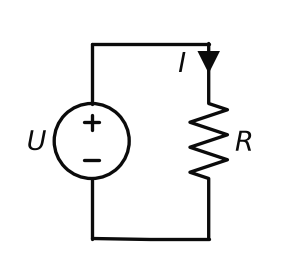
Napětí je jako tlak vody, proud jako průtok a odpor jako zúžení trubky. Větší tlak protlačí víc vody, užší trubka propustí méně. Ohmův zákon je přesně tento vztah pro elektřinu.
Rezistor 4,7 kΩ je připojen na napětí 9 V. Jaký proud teče?
\[ I = \frac{U}{R} = \frac{9\ \text{V}}{4700\ \Omega} \] \[ I \approx 1{,}91\ \text{mA} \]V elektronice se počítá v kΩ a mA: kΩ · mA = V. Ušetříš si mocniny deseti. Například 2 kΩ · 3 mA = 6 V. Kontroluj ale, že nemícháš Ω s mA – to je nejčastější chyba o tři řády.
Elektrický výkon \(P\) je práce (energie), kterou elektrický proud vykoná za jednotku času. Na součástce je roven součinu napětí na součástce a proudu, který jí protéká: \[ P = U \cdot I \] Jednotkou je watt (W = V · A).
kolik energie za sekundu součástka spotřebuje – v rezistoru se celá mění na teplo. Po dosazení Ohmova zákona platí i \(P = R \cdot I^2 = U^2/R\), takže stačí znát dvě ze tří veličin. Rezistor z příkladu výše (9 V na 4,7 kΩ) hřeje výkonem asi 17 mW.
Sériové a paralelní řazení rezistorů
Než se pustíme do Kirchhoffových zákonů a děliče, potřebujeme umět nahradit několik rezistorů jedním. To se hodí hlavně u zatíženého děliče.
Sériově (za sebou, teče jimi stejný proud) se odpory sčítají:
\[ R_s = R_1 + R_2 \]Paralelně (vedle sebe, je na nich stejné napětí) se sčítají vodivosti \(1/R\):
\[ \frac{1}{R_p} = \frac{1}{R_1} + \frac{1}{R_2} \]Pro dva rezistory to vychází jako „součin lomeno součet“:
\[ R_p = R_1 \parallel R_2 = \frac{R_1 R_2}{R_1 + R_2} \]| \(R_s\) | náhradní odpor sériového spojení – vždy větší než největší z rezistorů |
| \(R_p\) | náhradní odpor paralelního spojení – vždy menší než nejmenší z rezistorů |
| \(\parallel\) | zkratka pro „paralelně s“ |
Dva stejné rezistory 10 kΩ paralelně dávají polovinu:
\[ R_p = \frac{10 \cdot 10}{10 + 10} = 5\ \text{k}\Omega \]10 kΩ paralelně se 100 kΩ dává o něco méně než 10 kΩ:
\[ R_p = \frac{10 \cdot 100}{10 + 100} \approx 9{,}09\ \text{k}\Omega \]Velký odpor paralelně k malému tedy na výsledku skoro nic nezmění – to je klíč k zatíženému děliči.
Kirchhoffovy zákony
Uzel je místo obvodu, kde se spojují alespoň tři vodiče. Větev je část obvodu mezi dvěma sousedními uzly; protéká jí v celé délce stejný proud. Smyčka je uzavřená cesta obvodem, která projde každým uzlem nejvýše jednou.
uzel = „křižovatka“, kde se proud dělí nebo slévá; větev = „silnice“ mezi křižovatkami; smyčka = „okruh“, který mě vrátí tam, kde jsem začal.
1. Kirchhoffův zákon říká, že algebraický součet proudů v každém uzlu je roven nule: \(\sum I_k = 0\). Proudy do uzlu vtékající bereme s jedním znaménkem, vytékající s opačným.
kolik proudu do uzlu přiteče, tolik z něj musí odtéct – náboj se v uzlu nehromadí ani neztrácí (zákon zachování náboje).
2. Kirchhoffův zákon říká, že algebraický součet všech napětí podél libovolné uzavřené smyčky je roven nule: \(\sum U_k = 0\). Napětí zdrojů a úbytky napětí na součástkách bereme se znaménkem podle zvoleného směru oběhu.
když obejdu smyčku a vrátím se na start, jsem na stejném potenciálu – kolik napětí zdroje „dodají“, tolik se ho na součástkách „spotřebuje“ (zákon zachování energie).
| \(I_\text{dovnitř}, I_\text{ven}\) | proudy vtékající do uzlu a vytékající z něj |
| \(U_\text{zdrojů}\) | napětí zdrojů ve smyčce (kladné, pokud zdroj „žene“ proud ve směru oběhu) |
| \(R_k I_k\) | úbytek napětí na rezistoru \(R_k\) podle Ohmova zákona (kladný, pokud proud \(I_k\) teče ve směru oběhu) |
- Označ neznámé proudy ve všech větvích a ke každému nakresli šipku. Směr zvol libovolně – když se netrefíš, vyjde proud záporný.
- Spočítej rovnice: obvod s \(u\) uzly a \(v\) větvemi potřebuje \(u - 1\) rovnic podle 1. KZ a \(v - u + 1\) rovnic podle 2. KZ (nezávislé smyčky, typicky „okénka“ obvodu). Celkem tolik rovnic, kolik je neznámých proudů.
- 1. KZ pro uzly: vtékající = vytékající.
- 2. KZ pro smyčky: zvol směr oběhu a napiš „napětí zdrojů = součet \(R \cdot I\)“, se znaménky podle šipek.
- Vyřeš soustavu (dosazovací nebo sčítací metodou, případně maticí).
- Interpretuj znaménka (záporný proud = teče opačně, než ukazuje šipka) a zkontroluj výsledek dosazením do rovnice, kterou jsi nepoužil.
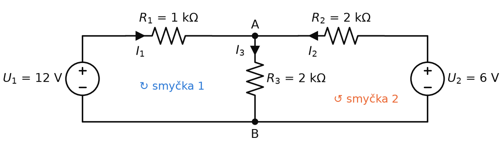
Zadáno: \(U_1 = 12\) V, \(U_2 = 6\) V, \(R_1 = 1\) kΩ, \(R_2 = 2\) kΩ, \(R_3 = 2\) kΩ. Hledáme proudy \(I_1, I_2, I_3\). Počítáme v kΩ a mA.
1. Rovnice. Dva uzly → jedna rovnice podle 1. KZ (uzel A). Tři větve → \(3 - 2 + 1 = 2\) rovnice podle 2. KZ.
Uzel A (\(I_1\) a \(I_2\) do uzlu vtékají, \(I_3\) vytéká):
\[ I_1 + I_2 = I_3 \]Smyčka 1 (\(U_1\), \(R_1\), \(R_3\)):
\[ U_1 = R_1 I_1 + R_3 I_3 \] \[ 12 = 1 \cdot I_1 + 2 \cdot I_3 \]Smyčka 2 (\(U_2\), \(R_2\), \(R_3\)):
\[ U_2 = R_2 I_2 + R_3 I_3 \] \[ 6 = 2 \cdot I_2 + 2 \cdot I_3 \]2. Dosazení \(I_3 = I_1 + I_2\) do obou smyček:
\[ \begin{aligned} 12 &= I_1 + 2(I_1 + I_2) = 3 I_1 + 2 I_2 \\ 6 &= 2 I_2 + 2(I_1 + I_2) = 2 I_1 + 4 I_2 \end{aligned} \]3. Řešení. První rovnici vynásobíme dvěma a odečteme druhou:
\[ \begin{array}{rcl} 24 &=& 6 I_1 + 4 I_2 \\ 6 &=& 2 I_1 + 4 I_2 \\ \hline 18 &=& 4 I_1 \end{array} \] \[ I_1 = 4{,}5\ \text{mA} \] \[ I_2 = \frac{12 - 3 \cdot 4{,}5}{2} = -0{,}75\ \text{mA} \] \[ I_3 = I_1 + I_2 = 3{,}75\ \text{mA} \]4. Interpretace. \(I_2\) vyšel záporný: proud ve skutečnosti teče opačně, než ukazuje šipka, tedy z uzlu A do zdroje \(U_2\) (silnější zdroj \(U_1\) „nabíjí“ slabší \(U_2\)).
5. Kontrola – napětí uzlu A proti B třemi cestami:
\[ U_{AB} = R_3 I_3 = 2 \cdot 3{,}75 = 7{,}5\ \text{V} \] \[ U_{AB} = U_1 - R_1 I_1 = 12 - 4{,}5 = 7{,}5\ \text{V} \] \[ U_{AB} = U_2 - R_2 I_2 = 6 + 1{,}5 = 7{,}5\ \text{V} \]Všechny tři cesty dávají stejné napětí, výsledek je správně.
Místo tří proudů můžeš hledat jen jedno neznámé napětí uzlu A (proti B). Každý proud vyjádříš Ohmovým zákonem a dosadíš do 1. KZ pro uzel A:
\[ \frac{U_1 - U_A}{R_1} + \frac{U_2 - U_A}{R_2} = \frac{U_A}{R_3} \] \[ \frac{12 - U_A}{1} + \frac{6 - U_A}{2} = \frac{U_A}{2} \] \[ 15 = 2\,U_A \quad\Rightarrow\quad U_A = 7{,}5\ \text{V} \]Proudy pak z Ohmova zákona. Jedna rovnice místo tří – u obvodů s jedním „hlavním“ uzlem je to nejrychlejší cesta. Je to pořád 1. KZ, jen chytře zapsaný.
- Znaménka ve smyčce: zvol směr oběhu jednou a drž se ho. Rezistor, kterým teče proud proti směru oběhu, má úbytek se záporným znaménkem.
- Záporný výsledek není chyba – jen informace o skutečném směru proudu. Nepřepisuj šipky uprostřed výpočtu.
- Příliš mnoho rovnic: rovnice 1. KZ pro poslední uzel už nic nového nepřinese (je součtem ostatních).
„První Kirchhoffův zákon vychází ze zachování náboje: součet proudů do uzlu se rovná součtu proudů z uzlu. Druhý vychází ze zachování energie: součet napětí ve smyčce je nula, tedy napětí zdrojů se rovná součtu úbytků \(R \cdot I\). Při výpočtu označím proudy ve větvích, napíšu \(u-1\) uzlových rovnic a tolik smyčkových, aby rovnic bylo stejně jako neznámých, soustavu vyřeším a záporný proud znamená opačný směr.“
1. KZ: co do uzlu vteče, to vyteče. 2. KZ: ve smyčce se napětí zdrojů „spotřebuje“ na rezistorech. Spolu s Ohmovým zákonem spočítají každý odporový obvod.
Nezatížený dělič napětí
Dělič napětí je zapojení dvou sériově řazených rezistorů \(R_1\) a \(R_2\) připojených ke vstupnímu napětí \(U_1\); výstupní napětí \(U_2\) se odebírá z jednoho z rezistorů (\(R_2\)) a je částí vstupního napětí v poměru odporů. Nezatížený dělič je takový, z jehož výstupu se neodebírá žádný proud.
dva rezistory za sebou si rozdělí napětí – každý dostane podíl úměrný svému odporu. Výstup „odbočkou“ mezi nimi dá zmenšenou kopii vstupu.
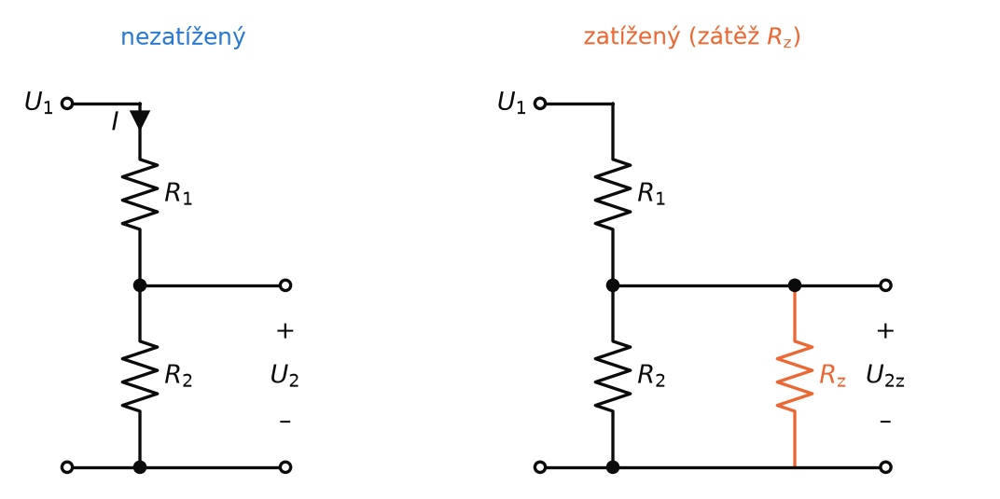
- Výstup je naprázdno → z odbočky neteče žádný proud. Oběma rezistory proto teče stejný proud \(I\) (1. KZ v uzlu mezi nimi).
- Rezistory jsou tedy v sérii. Celkový odpor je \(R_1 + R_2\) a z Ohmova zákona: \[ I = \frac{U_1}{R_1 + R_2} \]
- Výstupní napětí je úbytek na \(R_2\) (znovu Ohmův zákon): \[ U_2 = R_2 \cdot I \]
- Dosadím proud z kroku 2: \[ U_2 = R_2 \cdot \frac{U_1}{R_1 + R_2} \]
| \(U_1\) | vstupní napětí (na celém děliči) |
| \(U_2\) | výstupní napětí (na rezistoru \(R_2\)) |
| \(R_1\) | „horní“ rezistor, mezi vstupem a výstupem |
| \(R_2\) | „dolní“ rezistor, mezi výstupem a zemí – na něm odebíráme napětí |
| \(\frac{R_2}{R_1+R_2}\) | dělicí poměr (přenos děliče), vždy mezi 0 a 1 |
\(U_1 = 10\) V, \(R_1 = R_2 = 10\) kΩ.
\[ I = \frac{10\ \text{V}}{20\ \text{k}\Omega} = 0{,}5\ \text{mA} \] \[ U_2 = 10 \cdot \frac{10}{10 + 10} = 5\ \text{V} \]Stejné rezistory dělí napětí napůl. Kdyby \(R_1 = 8\) kΩ a \(R_2 = 4\) kΩ při \(U_1 = 12\) V:
\[ U_2 = 12 \cdot \frac{4}{8 + 4} = 4\ \text{V} \]Vzorec děliče se v předmětu objeví ještě dvakrát: RC filtr je dělič, ve kterém je jeden rezistor nahrazen kondenzátorem (kap. 2), a zpětná vazba neinvertujícího zesilovače je dělič z výstupu na invertující vstup (kap. 3). Kdo umí dělič, umí půlku předmětu.
Zatížený dělič napětí
Zátěž je obvod nebo součástka připojená k výstupu zdroje signálu, která z něj odebírá proud; modelujeme ji odporem \(R_\text{z}\). Zatížený dělič je dělič napětí, k jehož výstupu je zátěž připojena – zátěž je pak paralelně k rezistoru \(R_2\).
jakmile na výstup děliče něco připojím (voltmetr, další stupeň), odebírá to proud a výstupní napětí klesne pod hodnotu spočítanou pro nezatížený dělič.
- Zátěž \(R_\text{z}\) je připojená mezi výstup a zem, stejně jako \(R_2\) – je tedy s \(R_2\) paralelně.
- Obě součástky nahradím jedním odporem: \[ R_{2\text{z}} = R_2 \parallel R_\text{z} = \frac{R_2 R_\text{z}}{R_2 + R_\text{z}} \]
- Obvod je teď zase obyčejný nezatížený dělič, jen s \(R_{2\text{z}}\) místo \(R_2\). Použiji známý vzorec: \[ U_{2\text{z}} = U_1 \cdot \frac{R_{2\text{z}}}{R_1 + R_{2\text{z}}} \]
- Protože \(R_{2\text{z}} < R_2\) (paralelní spojení je vždy menší), je i \(U_{2\text{z}} < U_2\): zátěž výstupní napětí vždy sníží.
Po dosazení za paralelní kombinaci a úpravě:
\[ U_{2\text{z}} = U_1 \cdot \frac{R_2 R_\text{z}}{R_1 R_2 + R_1 R_\text{z} + R_2 R_\text{z}} \]| \(R_\text{z}\) | odpor zátěže (vstupní odpor připojeného obvodu) |
| \(R_2 \parallel R_\text{z}\) | náhradní odpor dolní části děliče se zátěží |
| \(U_{2\text{z}}\) | výstupní napětí zatíženého děliče |
Kontrola: pro \(R_\text{z} \to \infty\) (nic nepřipojeno) je \(R_2 \parallel R_\text{z} \to R_2\) a vzorec přejde na nezatížený dělič.
\(U_1 = 10\) V, \(R_1 = R_2 = 10\) kΩ (nezatížený dává 5 V). Připojíme zátěž \(R_\text{z} = 10\) kΩ.
\[ R_{2\text{z}} = \frac{10 \cdot 10}{10 + 10} = 5\ \text{k}\Omega \] \[ U_{2\text{z}} = 10 \cdot \frac{5}{10 + 5} \approx 3{,}33\ \text{V} \]Napětí kleslo o třetinu. Se zátěží \(R_\text{z} = 100\) kΩ:
\[ R_{2\text{z}} = \frac{10 \cdot 100}{10 + 100} \approx 9{,}09\ \text{k}\Omega \] \[ U_{2\text{z}} = 10 \cdot \frac{9{,}09}{10 + 9{,}09} \approx 4{,}76\ \text{V} \]Pokles už jen o 4,8 %. Druhý dělič (12 V, 8 kΩ / 4 kΩ, nezatížený 4 V) se zátěží 4 kΩ:
\[ R_{2\text{z}} = 4 \parallel 4 = 2\ \text{k}\Omega \] \[ U_{2\text{z}} = 12 \cdot \frac{2}{8 + 2} = 2{,}4\ \text{V} \]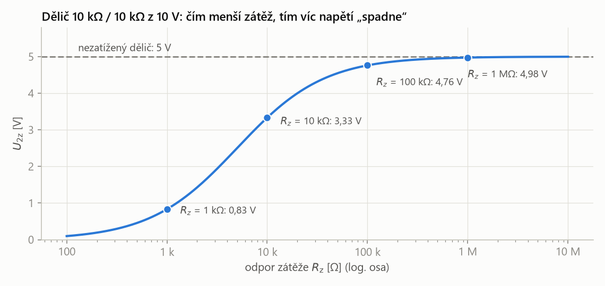
Malá zátěž (srovnatelná s \(R_2\) nebo menší) dělič „zbortí“. Když je \(R_\text{z}\) aspoň 10× větší než odpory děliče, je chyba pod 5 %; při 100× pod 0,5 %. Pravidlo: zátěž musí mít mnohem větší odpor než dělič.
Z pohledu zátěže se nezatížený dělič chová jako zdroj napětí \(U_2\) (napětí naprázdno) se sériovým vnitřním odporem \(R_i = R_1 \parallel R_2\) (Théveninova náhrada). Zátěž s tímto vnitřním odporem tvoří další dělič:
\[ U_{2\text{z}} = U_2 \cdot \frac{R_\text{z}}{R_i + R_\text{z}} \]Pro náš příklad \(R_i = 5\) kΩ a \(R_\text{z} = 10\) kΩ:
\[ U_{2\text{z}} = 5 \cdot \frac{10}{5 + 10} \approx 3{,}33\ \text{V} \]Stejný výsledek. Odtud je také vidět, proč stačí \(R_\text{z} \gg R_i\).
Zdrojem biosignálu je tělo s elektrodami, které má velký vnitřní odpor (kůže, rozhraní elektroda–gel, desítky kΩ až MΩ). Zesilovač, který k němu připojíme, je „zátěž“. Pokud by měl malý vstupní odpor, signál by se na něm zmenšil jako na zatíženém děliči. Proto biozesilovače potřebují velmi velký vstupní odpor – a proto se používá přístrojový zesilovač nebo napěťový sledovač (kap. 3 a 4).
„Nezatíženým děličem teče oběma rezistory stejný proud \(U_1/(R_1+R_2)\), výstupní napětí je úbytek na \(R_2\), takže \(U_2 = U_1 R_2/(R_1+R_2)\). Když připojím zátěž, je paralelně k \(R_2\); nahradím je paralelní kombinací a použiji stejný vzorec. Protože paralelní kombinace je menší než \(R_2\), výstupní napětí klesne. Chyba je malá, jen pokud je odpor zátěže mnohem větší než odpory děliče – typicky aspoň desetkrát.“
Dělič dává \(U_1 \cdot R_2/(R_1+R_2)\); zátěž se přidá paralelně k \(R_2\) a výstup sníží – zanedbatelně jen pokud \(R_\text{z} \gg R_2\).
Shrnutí
Ohmův zákon \(U = RI\) spojuje napětí, proud a odpor jedné součástky. 1. Kirchhoffův zákon (zachování náboje) říká, že součet proudů do uzlu je roven součtu proudů z uzlu, 2. Kirchhoffův zákon (zachování energie), že součet napětí ve smyčce je nula. Obvod spočítáme tak, že označíme proudy ve větvích, sestavíme \(u-1\) uzlových a zbylý počet smyčkových rovnic a soustavu vyřešíme; záporný proud jen znamená opačný směr. Dělič napětí ze dvou rezistorů dává \(U_2 = U_1 R_2/(R_1+R_2)\), protože oběma rezistory teče stejný proud. Zátěž je paralelně k \(R_2\), zmenší dolní odpor a tím i výstupní napětí; zanedbat ji lze, jen když je \(R_\text{z}\) mnohem větší než odpory děliče.
Take-home messages
- \(U = R \cdot I\); počítej v kΩ a mA, vyjdou volty.
- Sériově se odpory sčítají, paralelně „součin lomeno součet“ (výsledek menší než nejmenší).
- 1. KZ: proudy do uzlu = proudy z uzlu. 2. KZ: napětí zdrojů ve smyčce = součet \(R \cdot I\).
- Počet rovnic: \(u-1\) uzlových + \(v-u+1\) smyčkových; záporný proud = opačný směr.
- Nezatížený dělič: stejný proud oběma rezistory → \(U_2 = U_1 R_2/(R_1+R_2)\).
- Zatížený dělič: \(R_2\) nahraď \(R_2 \parallel R_\text{z}\); výstup vždy klesne.
- Zátěž zanedbatelná, když \(R_\text{z} \geq 10\times\) odpory děliče – proto mají zesilovače velký vstupní odpor.
Otázky ke zkoušce
Formulujte Ohmův zákon a vysvětlete, co znamenají jednotlivé veličiny.
Proud rezistorem je přímo úměrný napětí na něm a nepřímo úměrný jeho odporu: \(I = U/R\), tedy \(U = RI\). \(U\) je napětí (rozdíl potenciálů, V), \(I\) proud (náboj za čas, A), \(R\) odpor (Ω), který vyjadřuje, jak součástka brání průtoku proudu.
Formulujte oba Kirchhoffovy zákony. Z jakých fyzikálních principů vycházejí?
1. KZ: algebraický součet proudů v uzlu je nulový (vtékající = vytékající) – zákon zachování náboje. 2. KZ: algebraický součet napětí v uzavřené smyčce je nulový (napětí zdrojů = součet úbytků \(RI\)) – zákon zachování energie (potenciál po oběhu smyčky je stejný jako na začátku).
Popište postup výpočtu obvodu pomocí Kirchhoffových zákonů. Kolik rovnic potřebujete?
Označím neznámé proudy ve všech větvích a zvolím jejich směry. Sestavím \(u-1\) rovnic podle 1. KZ (\(u\) = počet uzlů) a \(v-u+1\) rovnic podle 2. KZ pro nezávislé smyčky (\(v\) = počet větví) – dohromady tolik rovnic, kolik je neznámých proudů. Úbytky vyjádřím Ohmovým zákonem, soustavu vyřeším. Záporný výsledek znamená, že proud teče opačně, než jsem zvolil. Nakonec zkontroluji dosazením (např. napětí uzlu spočítané různými cestami).
Odvoďte vzorec pro nezatížený dělič napětí.
Výstup je naprázdno, proto z odbočky neteče proud a oběma rezistory teče stejný proud \(I = U_1/(R_1+R_2)\). Výstupní napětí je úbytek na \(R_2\): \(U_2 = R_2 I = U_1 \cdot R_2/(R_1+R_2)\). Dělicí poměr \(R_2/(R_1+R_2)\) je vždy mezi 0 a 1.
Co se stane, když dělič zatížíme? Jak se to spočítá?
Zátěž \(R_\text{z}\) je paralelně k \(R_2\). Nahradím je odporem \(R_2 \parallel R_\text{z} = R_2R_\text{z}/(R_2+R_\text{z})\), který je menší než \(R_2\), a dosadím do vzorce nezatíženého děliče. Výstupní napětí proto klesne. Příklad: 10 V, 10 kΩ / 10 kΩ: bez zátěže 5 V, se zátěží 10 kΩ jen 3,33 V, se zátěží 100 kΩ 4,76 V.
Jak velká musí být zátěž, aby se dělič choval téměř jako nezatížený? Proč je to důležité u biosignálů?
Odpor zátěže musí být mnohem větší než odpory děliče (přesněji než jeho vnitřní odpor \(R_1 \parallel R_2\)); při desetinásobku je chyba asi do 5 %, při stonásobku pod 0,5 %. U biosignálů má zdroj (tělo + elektrody) velký vnitřní odpor, takže zesilovač musí mít velmi velký vstupní odpor, jinak by signál „spadl“ jako na zatíženém děliči. Proto přístrojový zesilovač nebo sledovač na vstupu.
Spočítejte: dělič 12 V, \(R_1 = 8\) kΩ, \(R_2 = 4\) kΩ, bez zátěže a se zátěží 4 kΩ.
Bez zátěže:
\[ U_2 = 12 \cdot \frac{4}{8+4} = 4\ \text{V} \]Se zátěží: \(R_2 \parallel R_\text{z} = 4 \parallel 4 = 2\) kΩ, takže
\[ U_{2\text{z}} = 12 \cdot \frac{2}{8+2} = 2{,}4\ \text{V} \]Základy 2
Analogové RC filtry
Biosignál nikdy nepřichází čistý: EKG je zatížené driftem izolinie (pomalé pohyby, dýchání), síťovým brumem 50 Hz a vysokofrekvenčním šumem svalů. Filtr propustí jen frekvence, které nás zajímají. Nejjednodušší analogové filtry jsou RC články – a nejsou nic jiného než dělič napětí z kap. 1, ve kterém je jeden rezistor nahrazen kondenzátorem.
Filtr a jeho přenos
Analogový filtr je obvod, který propouští složky spojitého signálu v určitém rozsahu frekvencí (propustné pásmo) a potlačuje složky v jiném rozsahu (nepropustné pásmo). Podle polohy propustného pásma rozlišujeme dolní propust, horní propust, pásmovou propust a pásmovou zádrž.
„síto na frekvence“ – co je v propustném pásmu, projde beze změny, co je v nepropustném, se ztlumí. Filtr je pasivní, pokud obsahuje jen R, C (L), a aktivní, pokud obsahuje i zesilovač.
Přenos (napěťový) obvodu je poměr výstupního a vstupního napětí harmonického signálu: \(H = U_\text{výst}/U_\text{vst}\). Jeho závislost na frekvenci je frekvenční (přenosová) charakteristika; skládá se z amplitudové charakteristiky \(|H(f)|\) (kolikrát se změní amplituda) a fázové charakteristiky \(\varphi(f)\) (o kolik se posune fáze).
pošlu na vstup sinusovku dané frekvence a podívám se, jak velká a jak posunutá vyjde na výstupu. Když to udělám pro všechny frekvence, dostanu „otisk“ filtru. (V literatuře se přenos značí také \(K\) nebo \(P\).)
Decibel (dB) je logaritmická jednotka poměru. Napěťový přenos v decibelech je \(A_\text{dB} = 20 \log_{10} |H|\).
místo násobení sčítám a velký rozsah (1 až 0,0001) se vejde do malého rozsahu čísel (0 až −80 dB). 0 dB = beze změny, záporné dB = zeslabení, kladné = zesílení. Každých 20 dB je desetinásobek.
| přenos \(|H|\) | v dB | význam |
|---|---|---|
| 1000 | +60 | zesílení 1000× |
| 10 | +20 | zesílení 10× |
| 2 | +6 | dvojnásobek |
| 1 | 0 | beze změny |
| \(1/\sqrt2 \approx 0{,}707\) | −3 | mezní frekvence |
| 0,5 | −6 | polovina |
| 0,1 | −20 | desetina |
| 0,01 | −40 | setina |
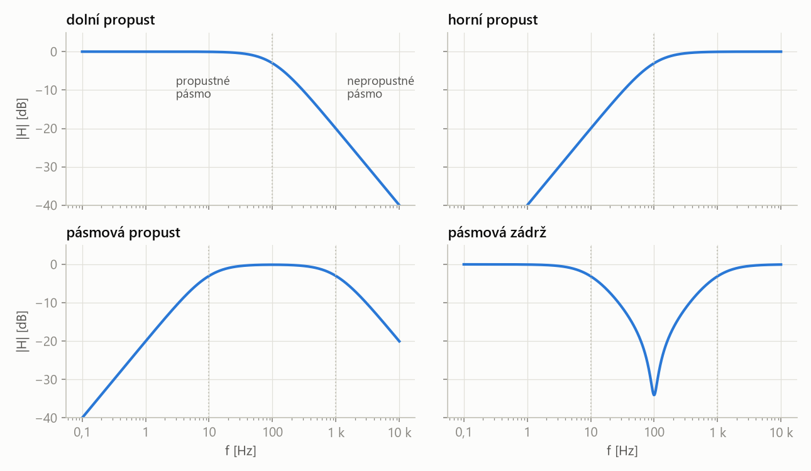
- Dolní propust (DP, low-pass) propouští frekvence pod mezní frekvencí – v EKG odstraní vysokofrekvenční šum.
- Horní propust (HP, high-pass) propouští frekvence nad mezní frekvencí – odstraní stejnosměrnou složku a drift izolinie.
- Pásmová propust (PP) propouští jen pásmo mezi dvěma frekvencemi, pásmová zádrž (PZ) naopak jedno pásmo potlačí (např. 50 Hz).
Kondenzátor: odpor, který závisí na frekvenci
Kondenzátor je součástka tvořená dvěma vodivými elektrodami oddělenými izolantem, která uchovává elektrický náboj. Kapacita \(C\) je poměr náboje na elektrodách a napětí mezi nimi: \(C = Q/U\); jednotkou je farad (F). Proud kondenzátorem je úměrný rychlosti změny napětí: \(i = C \cdot \frac{du}{dt}\).
kondenzátor je „zásobník náboje“. Stejnosměrným proudem neprochází (izolant), ale střídavý signál přes něj „projde“, protože se elektrody pořád nabíjejí a vybíjejí. Čím rychleji se napětí mění, tím větší proud teče.
Kapacitní reaktance \(X_C\) je „odpor“ kondenzátoru vůči harmonickému (sinusovému) proudu, tedy poměr amplitud napětí a proudu na kondenzátoru: \(X_C = \frac{1}{2\pi f C} = \frac{1}{\omega C}\). Je nepřímo úměrná frekvenci; proud kondenzátorem předbíhá napětí o 90°.
pro nízké frekvence má kondenzátor obrovský odpor (stejnosměrně = rozpojený obvod), pro vysoké frekvence malý (blíží se zkratu). Právě tato závislost na frekvenci dělá z RC článku filtr.
| \(f\) | frekvence signálu [Hz] |
| \(\omega = 2\pi f\) | úhlová frekvence [rad/s] |
| \(C\) | kapacita [F]; typicky nF až µF |
| \(X_C\) | reaktance – velikost „odporu“ kondenzátoru [Ω] |
| \(Z_C\) | impedance – komplexní tvar, který nese i fázový posun (−90°) |
| \(j\) | imaginární jednotka (\(j^2 = -1\)), v elektrotechnice místo \(i\) |
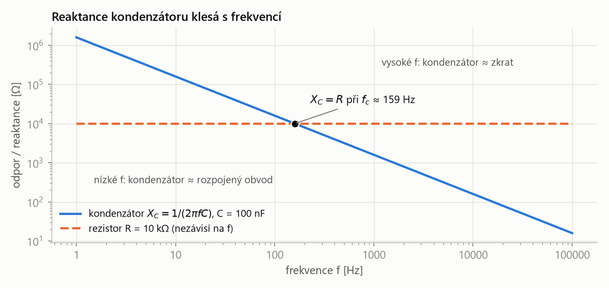
Pod 159 Hz je kondenzátor „větší odpor“ než rezistor, nad 159 Hz menší. Bod, kde \(X_C = R\), je mezní frekvence RC článku. V děliči z R a C se tedy kolem této frekvence „přelévá“ napětí z jedné součástky na druhou.
Dvacetkrát vyšší frekvence → dvacetkrát menší reaktance.
Dolní propust RC
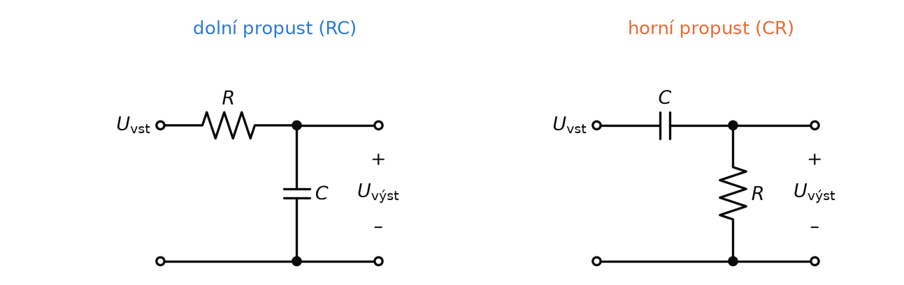
Dolní propust (low-pass filter) je filtr, který propouští složky signálu s frekvencí nižší než mezní frekvence \(f_c\) a složky s vyšší frekvencí potlačuje. Pasivní dolní propust 1. řádu tvoří rezistor v podélné větvi a kondenzátor v příčné větvi (výstup na kondenzátoru).
pomalé změny projdou, rychlé „zahladí“. Výstup je vyhlazená verze vstupu.
Je to dělič napětí: \(R\) je „horní“ rezistor, kondenzátor je „dolní“ a výstup bereme z kondenzátoru. Podíl napětí, který na kondenzátoru zůstane, závisí na poměru \(X_C\) a \(R\):
- Nízká frekvence: \(X_C \gg R\). Kondenzátor je skoro rozpojený, proud téměř neteče, na \(R\) není úbytek → výstup ≈ vstup.
- Vysoká frekvence: \(X_C \ll R\). Kondenzátor se chová skoro jako zkrat a „svádí“ signál do země; téměř celé napětí je na \(R\) → výstup ≈ 0.
Co dělá kondenzátor: je to frekvenčně závislý prvek, který rozhoduje, co projde. Co dělá rezistor: omezuje proud, kterým se kondenzátor nabíjí, a tvoří s ním dělič – bez něj by byl kondenzátor připojen přímo na zdroj a výstup by se vstupu vždy rovnal. Stejnou věc popisuje časová konstanta \(\tau = RC\): kondenzátor se přes rezistor nabíjí „pomalu“, takže nestačí sledovat rychlé změny vstupu.
Proč zrovna toto pořadí: výstup bereme z té součástky, na které má zůstat napětí v propustném pásmu. Pro nízké frekvence je „velký“ kondenzátor, proto výstup na C. Když součástky prohodím, dostanu horní propust.
Amplituda (modul) a fáze:
\[ |H| = \frac{1}{\sqrt{1 + (f/f_c)^2}} \] \[ \varphi = -\operatorname{arctg}\frac{f}{f_c} \]| \(R\) | odpor podélného rezistoru [Ω] |
| \(C\) | kapacita příčného kondenzátoru [F] |
| \(f_c\) | mezní frekvence \(1/(2\pi RC)\) |
| \(|H|\) | kolikrát se zmenší amplituda: 1 pro \(f \ll f_c\), \(0{,}707\) pro \(f = f_c\), \(\approx f_c/f\) pro \(f \gg f_c\) |
| \(\varphi\) | fázový posun výstupu vůči vstupu: od 0° do −90° (výstup se zpožďuje), v \(f_c\) přesně −45° |
Horní propust CR
Horní propust (high-pass filter) je filtr, který propouští složky signálu s frekvencí vyšší než mezní frekvence \(f_c\) a složky s nižší frekvencí (včetně stejnosměrné) potlačuje. Pasivní horní propust 1. řádu tvoří kondenzátor v podélné větvi a rezistor v příčné větvi (výstup na rezistoru).
rychlé změny projdou, pomalé a stálé hodnoty se odstraní. V EKG tak zmizí stejnosměrný offset elektrod a pomalé „plavání“ izolinie.
Stejný dělič, jen jsou součástky prohozené – výstup bereme z rezistoru:
- Nízká frekvence (i stejnosměrné napětí): \(X_C \gg R\). Kondenzátor v podélné větvi signál „nepustí“ – celé napětí je na něm, na \(R\) nic → výstup ≈ 0.
- Vysoká frekvence: \(X_C \ll R\). Kondenzátor je skoro zkrat, signál prochází na \(R\) → výstup ≈ vstup.
Co dělá kondenzátor: blokuje stejnosměrnou složku a pomalé změny (tzv. vazební kondenzátor). Co dělá rezistor: tvoří s ním dělič a určuje, k jaké úrovni (k zemi) se výstup „vrací“ – přes \(R\) se kondenzátor vybíjí, takže stálé napětí na výstupu zanikne s časovou konstantou \(\tau = RC\).
| \(C\) | kapacita podélného kondenzátoru [F] |
| \(R\) | odpor příčného rezistoru [Ω] |
| \(|H|\) | \(\approx f/f_c\) pro \(f \ll f_c\), \(0{,}707\) pro \(f = f_c\), 1 pro \(f \gg f_c\) |
| \(\varphi\) | od +90° do 0° (výstup předbíhá), v \(f_c\) přesně +45° |
Mezní frekvence
Mezní frekvence \(f_c\) (zlomová, −3dB frekvence) je frekvence, při které modul přenosu klesne na \(1/\sqrt{2} \approx 0{,}707\) své hodnoty v propustném pásmu, tj. o 3 dB. Pro RC článek 1. řádu (dolní i horní propust) platí \(f_c = \frac{1}{2\pi RC}\).
„hranice“ mezi propustným a nepropustným pásmem. Je to frekvence, kdy má kondenzátor stejnou reaktanci jako rezistor (\(X_C = R\)), výstupní výkon klesne na polovinu a amplituda na 70,7 %.
- Na mezní frekvenci má být \(|H| = 1/\sqrt2\). V přenosu \(\frac{1}{1 + j\omega RC}\) to nastane, když je reálná a imaginární část jmenovatele stejně velká: \[ \omega RC = 1 \]
- Totéž jinými slovy: \(\frac{1}{\omega C} = R\), tedy \(X_C = R\).
- Dosadím \(\omega = 2\pi f\) a vyjádřím frekvenci: \[ f_c = \frac{1}{2\pi RC} \]
- Kontrola: \(|H| = \frac{1}{|1 + j|} = \frac{1}{\sqrt{1^2 + 1^2}} = \frac{1}{\sqrt2}\).
| \(f_c\) | mezní frekvence [Hz] – stejný vzorec pro dolní i horní propust |
| \(R, C\) | odpor [Ω] a kapacita [F] článku |
| \(\tau\) | časová konstanta [s]; \(f_c = 1/(2\pi\tau)\) |
\(R = 10\) kΩ, \(C = 100\) nF.
\[ f_c = \frac{1}{2\pi \cdot 10^4 \cdot 10^{-7}} \] \[ f_c = \frac{1}{2\pi \cdot 10^{-3}} \approx 159\ \text{Hz} \]Jako dolní propust: jak projde signál 1 kHz?
\[ \frac{f}{f_c} = \frac{1000}{159} \approx 6{,}28 \] \[ |H| = \frac{1}{\sqrt{1 + 6{,}28^2}} \approx 0{,}157 \] \[ A_\text{dB} = 20 \log_{10} 0{,}157 \approx -16{,}1\ \text{dB} \]Jako horní propust: jak projde brum 50 Hz?
\[ \frac{f}{f_c} = \frac{50}{159} \approx 0{,}314 \] \[ |H| = \frac{0{,}314}{\sqrt{1 + 0{,}314^2}} \approx 0{,}30 \] \[ A_\text{dB} \approx -10{,}5\ \text{dB} \]Chceme dolní propust s \(f_c = 150\) Hz (horní hranice diagnostického EKG). Kondenzátor zvolíme z běžné řady, \(C = 100\) nF, a dopočítáme odpor:
\[ R = \frac{1}{2\pi f_c C} \] \[ R = \frac{1}{2\pi \cdot 150 \cdot 10^{-7}} \approx 10{,}6\ \text{k}\Omega \]Horní propust s \(f_c = 0{,}5\) Hz (odstranění driftu) a \(C = 1\) µF:
\[ R = \frac{1}{2\pi \cdot 0{,}5 \cdot 10^{-6}} \approx 318\ \text{k}\Omega \]Postup návrhu: jednu součástku zvolím (obvykle C, vyrábí se v méně hodnotách) a druhou dopočítám ze vzorce pro \(f_c\).
Řád filtru je řád přenosové funkce, u pasivních RC filtrů daný počtem kondenzátorů (nezávislých reaktančních prvků). Filtr \(n\)-tého řádu má v nepropustném pásmu sklon amplitudové charakteristiky \(20n\) dB na dekádu.
jeden RC článek = 1. řád = pokles o 20 dB na každý desetinásobek frekvence. Chci-li strmější „hranu“, řadím víc článků (2. řád = 40 dB/dek atd.).
Jak nakreslit přenosovou charakteristiku
U zkoušky stačí asymptotický náčrt (Bodeho graf): dvě přímky, které se lámou v mezní frekvenci, a skutečná křivka, která se k nim přimyká.
Bodeho graf je zobrazení frekvenční charakteristiky ve dvou grafech nad společnou logaritmickou osou frekvence: amplitudová charakteristika v decibelech (\(20\log_{10}|H|\)) a fázová charakteristika ve stupních.
díky logaritmům na obou osách se z křivek stanou téměř přímky, které jde nakreslit od ruky – stačí znát mezní frekvenci a sklon.
- Spočítej \(f_c = 1/(2\pi RC)\).
- Nakresli osy: vodorovně frekvence v logaritmickém měřítku (dekády 1, 10, 100, 1000 … stejně daleko od sebe), svisle přenos v dB. \(f_c\) zhruba doprostřed.
- Asymptota v propustném pásmu: vodorovná přímka na 0 dB od levého okraje až do \(f_c\).
- Asymptota v nepropustném pásmu: od bodu (\(f_c\); 0 dB) přímka dolů se sklonem −20 dB/dekádu: v \(10 f_c\) je −20 dB, ve \(100 f_c\) −40 dB.
- Skutečná křivka: v \(f_c\) leží o 3 dB pod zlomem, o dekádu dál od zlomu už téměř splývá s asymptotami (v \(f_c/10\) i \(10 f_c\) je odchylka jen 0,04 dB).
- Fáze: 0° hluboko pod \(f_c\), −45° přesně v \(f_c\), −90° hluboko nad \(f_c\); asymptoticky přímka od \(f_c/10\) (0°) do \(10 f_c\) (−90°).
Horní propust: zrcadlově – v nepropustném pásmu přímka stoupající +20 dB/dek až do \(f_c\), pak 0 dB; fáze z +90° přes +45° na 0°.
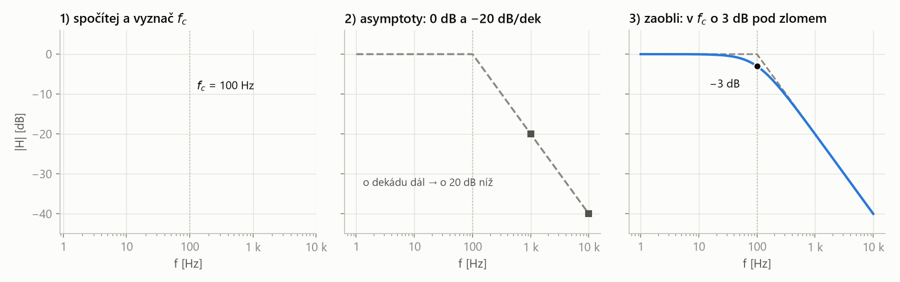
| \(f / f_c\) | \(|H|\) DP | DP [dB] | fáze DP | poznámka |
|---|---|---|---|---|
| 0,1 | 0,995 | −0,04 | −5,7° | prakticky propouští |
| 0,5 | 0,894 | −0,97 | −26,6° | |
| 1 | 0,707 | −3,01 | −45° | mezní frekvence |
| 2 | 0,447 | −6,99 | −63,4° | oktáva nad \(f_c\): ≈ −6 dB |
| 10 | 0,0995 | −20,0 | −84,3° | dekáda nad \(f_c\) |
| 100 | 0,0100 | −40,0 | −89,4° |
Pro horní propust platí stejná čísla zrcadlově: při \(f/f_c = 10\) je −0,04 dB, při \(f/f_c = 0{,}1\) je −20 dB.
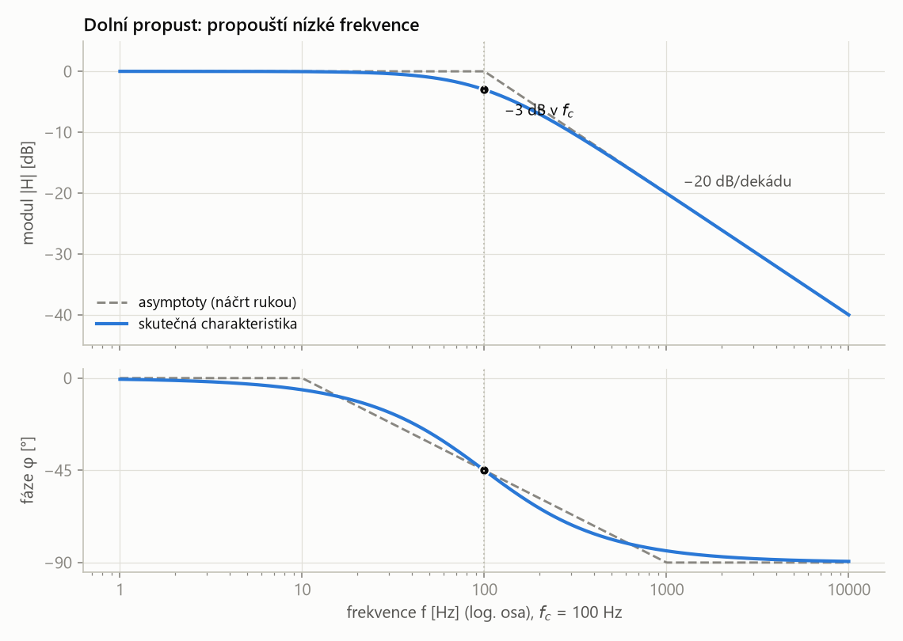
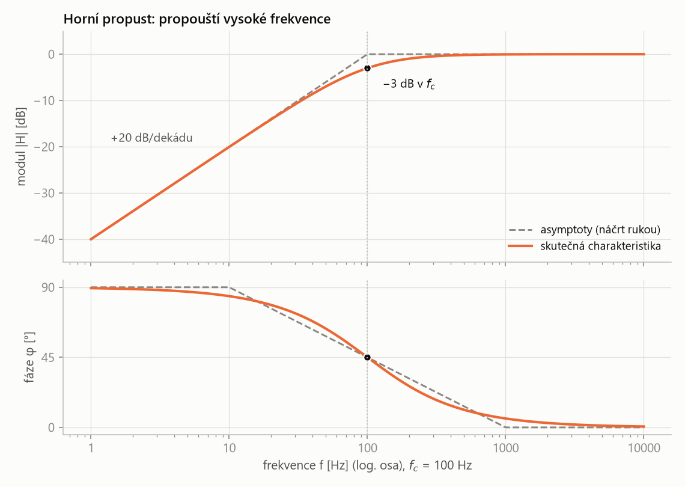
- Celá charakteristika je určená jedním číslem – \(f_c\). Zbytek je vždy stejný tvar.
- V \(f_c\): −3 dB a fáze ±45°. Daleko od \(f_c\): skutečná křivka = asymptota.
- Sklon 1. řádu je 20 dB/dekádu (≈ 6 dB/oktávu). Dolní propust klesá doprava, horní propust stoupá zleva.
- Lineární osa frekvence – pak z přímek nejsou přímky. Vždy logaritmická osa.
- Skutečná křivka procházející zlomem na 0 dB – v \(f_c\) je vždy o 3 dB níž.
- Záměna \(\omega\) a \(f\): \(\omega_c = 1/(RC)\) [rad/s], ale \(f_c = 1/(2\pi RC)\) [Hz]. Rozdíl je 6,28×.
- Jednotky: nF = \(10^{-9}\) F, µF = \(10^{-6}\) F, kΩ = \(10^3\) Ω, MΩ = \(10^6\) Ω.
„RC dolní propust je dělič napětí, kde dolní rezistor nahradí kondenzátor. Jeho reaktance \(1/(2\pi fC)\) klesá s frekvencí, takže pro nízké frekvence je na něm skoro celé napětí a pro vysoké ho zkratuje k zemi. Mezní frekvence je tam, kde \(X_C = R\): \(f_c = 1/(2\pi RC)\), přenos tam klesne na 0,707, tedy o 3 dB, a fáze je −45°. Nad ní přenos klesá 20 dB na dekádu. Horní propust má součástky prohozené a chová se zrcadlově.“
Pásmová propust
Pásmová propust (band-pass filter) je filtr, který propouští složky signálu s frekvencemi mezi dolní mezní frekvencí \(f_d\) a horní mezní frekvencí \(f_h\) a potlačuje frekvence pod \(f_d\) i nad \(f_h\). Šířka pásma je \(B = f_h - f_d\).
„okno“ ve frekvencích – propustí jen pásmo, ve kterém je užitečný signál (EKG asi 0,05–150 Hz), a ořízne drift i šum zároveň.
Nejjednodušší pásmová propust je kaskáda (sériové řazení) horní propusti s mezní frekvencí \(f_d\) a dolní propusti s mezní frekvencí \(f_h\). Signál musí projít oběma filtry: horní propust ořízne vše pod \(f_d\), dolní propust vše nad \(f_h\). Přenosy se násobí (v dB sčítají):
\[ H_\text{PP} = H_\text{HP} \cdot H_\text{DP} \]Aby vzniklo propustné pásmo, musí platit \(f_d < f_h\) – a pro „plochý vršek“ ideálně aspoň o dekádu.
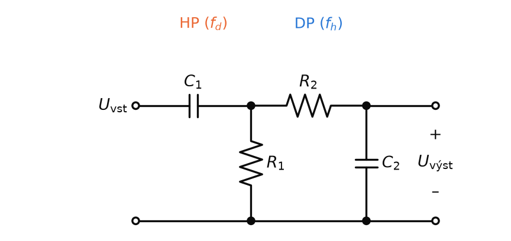
| \(f_d\) | dolní mezní frekvence – daná horní propustí \(R_1 C_1\) |
| \(f_h\) | horní mezní frekvence – daná dolní propustí \(R_2 C_2\) |
| \(B\) | šířka pásma [Hz] |
| \(f_0\) | střední frekvence – geometrický průměr (na logaritmické ose leží uprostřed) |
Použijeme články z příkladu 2: horní propust \(C_1 = 1\) µF, \(R_1 = 318\) kΩ (\(f_d = 0{,}5\) Hz) a dolní propust \(R_2 = 10{,}6\) kΩ, \(C_2 = 100\) nF (\(f_h = 150\) Hz).
\[ B = 150 - 0{,}5 = 149{,}5\ \text{Hz} \] \[ f_0 = \sqrt{0{,}5 \cdot 150} \approx 8{,}7\ \text{Hz} \]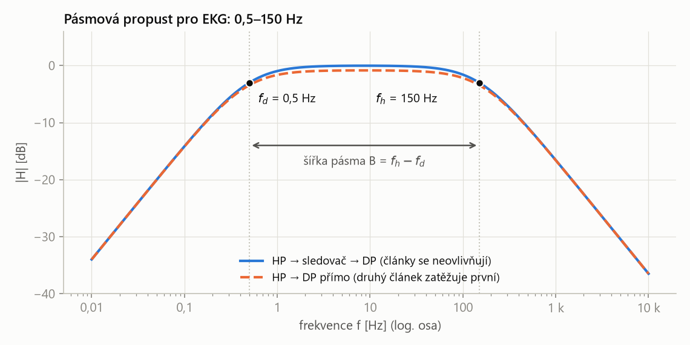
Charakteristika je „horní propust vlevo + dolní propust vpravo“: vlevo stoupá +20 dB/dek, mezi \(f_d\) a \(f_h\) je rovná, vpravo klesá −20 dB/dek. Když články spojíme přímo, druhý článek zatěžuje první (jako zátěž děliče v kap. 1) a v propustném pásmu ztratíme část signálu (tady asi 0,9 dB; při podobných impedancích obou článků mnohem víc) a posunou se i mezní frekvence.
- Zatěžování: vzorce pro \(f_d\) a \(f_h\) platí přesně, jen když se články neovlivňují. Řešení: mezi články napěťový sledovač (kap. 4), nebo volit impedance druhého článku mnohem větší než prvního.
- Blízké mezní frekvence: pokud \(f_d\) a \(f_h\) nejsou daleko od sebe, propustné pásmo nedosáhne 0 dB (každý filtr už v pásmu trochu tlumí).
- Pořadí HP → DP nebo DP → HP na výsledný přenos nemá vliv (přenosy se násobí), pokud jsou články oddělené.
Pásmová zádrž
Pásmová zádrž (band-stop filter) je filtr, který potlačuje složky signálu v pásmu frekvencí kolem střední frekvence \(f_0\) a frekvence pod tímto pásmem i nad ním propouští. Úzká pásmová zádrž potlačující jedinou frekvenci se nazývá notch filtr (odlaďovač).
opak pásmové propusti – „vyřízne“ jedno pásmo a vše ostatní nechá. Typické použití: odstranění síťového brumu 50 Hz z EKG nebo EEG.
Myšlenka 1 – paralelní spojení: dolní propust (s nízkou mezní frekvencí \(f_1\)) a horní propust (s vysokou mezní frekvencí \(f_2 > f_1\)) dám vedle sebe a jejich výstupy sečtu. Nízké frekvence projdou dolní propustí, vysoké horní propustí, pásmo mezi \(f_1\) a \(f_2\) neprojde ani jednou (obr. 2.1 vpravo dole). Pozor na rozdíl od pásmové propusti: tam jsou filtry za sebou, tady vedle sebe.
Myšlenka 2 – dvojitý T-článek: signál jde ze vstupu na výstup dvěma cestami. Horní cesta R–R s kondenzátorem 2C k zemi je dolní propust (fázi zpožďuje), dolní cesta C–C s rezistorem R/2 k zemi je horní propust (fázi předbíhá). Na frekvenci \(f_0\) jsou oba příspěvky stejně velké a v protifázi, takže se na výstupu přesně odečtou → přenos je teoreticky nulový.
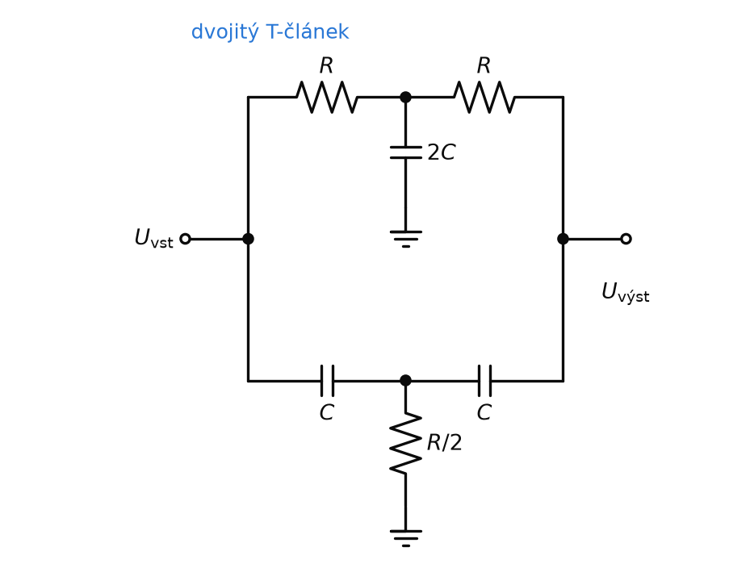
| \(f_0\) | potlačovaná (střední) frekvence [Hz] |
| \(R, C\) | hodnoty v podélných větvích; příčné prvky mají hodnoty \(R/2\) a \(2C\) |
Zvolíme \(C = 100\) nF a dopočítáme \(R\):
\[ R = \frac{1}{2\pi f_0 C} \] \[ R = \frac{1}{2\pi \cdot 50 \cdot 10^{-7}} \approx 31{,}8\ \text{k}\Omega \]Příčné prvky: \(R/2 \approx 15{,}9\) kΩ a \(2C = 200\) nF.
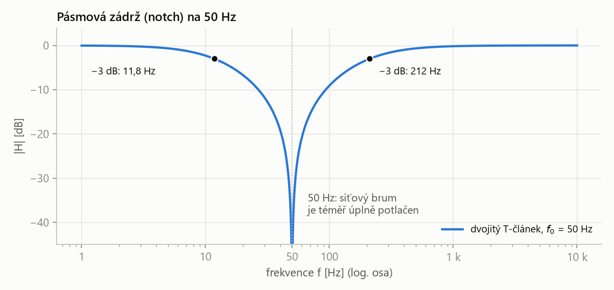
Na 50 Hz je potlačení teoreticky nekonečné. Pasivní dvojitý T-článek má ale široký „zářez“: pokles o 3 dB je už na 11,8 Hz a 212 Hz, takže by tlumil i užitečné složky EKG. V praxi se proto doplňuje operačním zesilovačem (aktivní zádrž), který zářez zúží.
Síťové rušení je na obou elektrodách skoro stejné (souhlasné). Hlavní obranou je proto rozdílový / přístrojový zesilovač s velkým CMRR, který souhlasné rušení potlačí už při zesílení – výpočet CMRR je v kap. 3. Zádrž 50 Hz odstraňuje až zbytek, a protože potlačí i složky EKG kolem 50 Hz, používá se s rozmyslem.
RC článek je dělič s kondenzátorem: výstup na C = dolní propust, výstup na R = horní propust, \(f_c = 1/(2\pi RC)\), −3 dB, 20 dB/dek. HP + DP za sebou = pásmová propust, vedle sebe (nebo dvojitý T) = pásmová zádrž.
Shrnutí
Filtr propouští určité pásmo frekvencí a jiné potlačuje; popisuje ho přenos \(H = U_\text{výst}/U_\text{vst}\) v závislosti na frekvenci, kreslený jako Bodeho graf (dB a fáze nad logaritmickou osou). Kondenzátor má reaktanci \(X_C = 1/(2\pi fC)\), která s frekvencí klesá – pro nízké frekvence je rozpojený, pro vysoké zkrat. Dolní propust je dělič s R nahoře a C dole (výstup na C), horní propust má součástky prohozené (výstup na R). Pro obě je mezní frekvence \(f_c = 1/(2\pi RC)\), kde \(X_C = R\), přenos je 0,707 (−3 dB) a fáze ±45°; za ní se přenos mění o 20 dB na dekádu. Pásmová propust vznikne zařazením horní a dolní propusti za sebe (\(f_d < f_h\), \(B = f_h - f_d\)); články je třeba oddělit, aby se nezatěžovaly. Pásmová zádrž potlačí pásmo kolem \(f_0\) – paralelním spojením DP a HP nebo dvojitým T-článkem, kde se dvě cesty na \(f_0\) vyruší.
Take-home messages
- RC filtr = dělič napětí s kondenzátorem; \(X_C = 1/(2\pi fC)\) klesá s frekvencí.
- Výstup na C → dolní propust; výstup na R → horní propust.
- \(f_c = 1/(2\pi RC)\): \(X_C = R\), \(|H| = 0{,}707\), −3 dB, fáze ∓45°.
- 1. řád: sklon 20 dB/dekádu; \(n\)-tý řád \(20n\) dB/dek.
- Kreslení: log. osa, asymptoty 0 dB a ∓20 dB/dek zlomené v \(f_c\), skutečná křivka o 3 dB níž.
- Pásmová propust = HP + DP za sebou; pásmová zádrž = DP + HP vedle sebe / dvojitý T, \(f_0 = 1/(2\pi RC)\).
- Články v kaskádě se zatěžují – odděluje je sledovač.
Otázky ke zkoušce
Nakreslete dolní propust RC a vysvětlete, proč propouští nízké frekvence. Jakou roli má R a jakou C?
Rezistor v podélné větvi, kondenzátor proti zemi, výstup na kondenzátoru. Je to dělič napětí, kde je dolní prvek kondenzátor s reaktancí \(1/(2\pi fC)\). Pro nízké frekvence je reaktance velká, kondenzátor je skoro rozpojený, na R není úbytek a výstup ≈ vstup. Pro vysoké frekvence je reaktance malá a kondenzátor svádí signál do země, výstup ≈ 0. C je frekvenčně závislý prvek, R omezuje nabíjecí proud a tvoří s C dělič (časová konstanta \(RC\)).
Čím se liší horní propust od dolní? Proč stačí prohodit součástky?
V horní propusti je kondenzátor v podélné větvi a výstup se bere z rezistoru. Pro nízké frekvence (i DC) má kondenzátor velkou reaktanci, napětí zůstane na něm a výstup je ≈ 0; pro vysoké frekvence je kondenzátor zkrat a signál projde na R. Výstup bereme vždy z té součástky, na které má být napětí v propustném pásmu – proto prohození dá opačné chování. Mezní frekvence je stejná, \(1/(2\pi RC)\).
Definujte mezní frekvenci a odvoďte její vzorec pro RC článek.
Mezní frekvence je frekvence, při které přenos klesne na \(1/\sqrt2\) hodnoty v propustném pásmu (−3 dB). Přenos DP je \(1/(1 + j\omega RC)\); jeho modul je \(1/\sqrt2\), když \(\omega RC = 1\), tedy \(X_C = R\). Odtud \(f_c = 1/(2\pi RC)\).
Jak nakreslíte přenosovou charakteristiku RC dolní propusti?
Spočítám \(f_c\). Vodorovná osa frekvence logaritmicky, svislá přenos v dB. Do \(f_c\) vodorovná asymptota 0 dB, od \(f_c\) přímka klesající −20 dB/dekádu. Skutečná křivka je v \(f_c\) o 3 dB pod zlomem a dekádu od zlomu splývá s asymptotami. Fáze: 0° → −45° v \(f_c\) → −90°. Horní propust zrcadlově (+20 dB/dek, pak 0 dB; fáze +90° → 0°).
Spočítejte mezní frekvenci pro R = 10 kΩ a C = 100 nF. Kolik dB ztratí signál 1 kHz v dolní propusti?
Jak vytvoříte pásmovou propust z RC článků a na co si dát pozor?
Horní propust s mezní frekvencí \(f_d\) a za ní dolní propust s \(f_h\), přičemž \(f_d < f_h\) (ideálně o víc než dekádu). Přenosy se násobí. Šířka pásma \(B = f_h - f_d\), střed \(f_0 = \sqrt{f_d f_h}\). Pozor: druhý článek zatěžuje první, takže klesne přenos v pásmu a posunou se mezní frekvence – řeší se oddělovacím sledovačem nebo volbou mnohem větších impedancí druhého článku.
Vysvětlete princip pásmové zádrže a navrhněte dvojitý T-článek na 50 Hz.
Zádrž potlačí pásmo kolem \(f_0\). Princip: dolní a horní propust paralelně a sečtené (pásmo mezi jejich mezními frekvencemi neprojde ničím), nebo dvojitý T-článek, kde horní cesta (R–R, 2C) fázi zpožďuje a dolní (C–C, R/2) předbíhá; na \(f_0 = 1/(2\pi RC)\) jsou signály stejně velké a v protifázi a vyruší se. Pro 50 Hz a \(C = 100\) nF: \(R \approx 31{,}8\) kΩ, \(R/2 \approx 15{,}9\) kΩ, \(2C = 200\) nF.
Co je decibel a kolik dB odpovídá přenosu 0,707, 0,1 a 1000?
Logaritmická míra poměru, pro napětí \(20\log_{10}|H|\). 0,707 → −3 dB (mezní frekvence), 0,1 → −20 dB, 1000 → +60 dB.
Základy 3
Operační zesilovače
Biosignály jsou slabé – EKG má jednotky mV, EEG desítky µV – a přicházejí ze zdroje s velkým vnitřním odporem a s rušením, které je mnohonásobně větší než signál. Operační zesilovač (OZ) je univerzální stavební kámen, ze kterého se pár rezistory postaví zesilovač s přesně daným zesílením, velkým vstupním odporem a schopností potlačit rušení. Celá kapitola stojí na dvou jednoduchých pravidlech.
Co je operační zesilovač
Operační zesilovač je stejnosměrně vázaný rozdílový zesilovač s velmi velkým zesílením, se dvěma vstupy – neinvertujícím (+) a invertujícím (−) – a jedním výstupem. Výstupní napětí je úměrné rozdílu vstupních napětí: \(U_\text{výst} = A_0\,(U_+ - U_-)\).
„porovnává“ napětí na dvou vstupech a jejich rozdíl obrovsky zesílí. Sám o sobě je nepoužitelný (zesílení je příliš velké a nepřesné); teprve s rezistory ve zpětné vazbě z něj vznikne zesilovač s přesným zesílením.
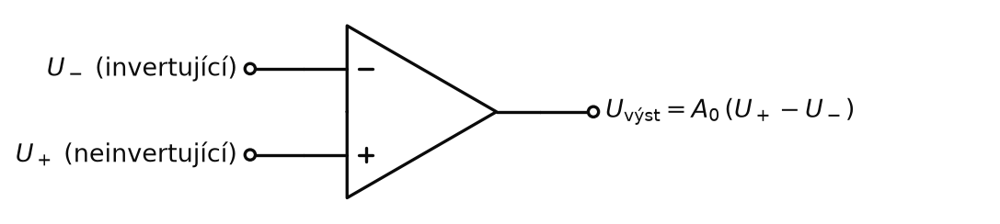
| \(U_+\), \(U_-\) | napětí na neinvertujícím a invertujícím vstupu (proti zemi) |
| \(U_d\) | rozdílové (diferenční) vstupní napětí |
| \(A_0\) | zesílení naprázdno (bez zpětné vazby), typicky \(10^5\) až \(10^6\), tj. 100–120 dB |
| vlastnost | ideální OZ | reálný OZ (typicky) | co to znamená |
|---|---|---|---|
| zesílení \(A_0\) | ∞ | \(10^5\)–\(10^6\) | stačí nepatrný rozdíl vstupů |
| vstupní odpor | ∞ | MΩ až TΩ | do vstupů neteče proud |
| výstupní odpor | 0 | desítky Ω | výstup „udrží“ napětí i při zátěži |
| šířka pásma | ∞ | MHz (součin zesílení × šířka pásma) | pro biosignály obvykle stačí |
| CMRR | ∞ | 80–120 dB | souhlasné napětí se nezesiluje |
| výstupní napětí | libovolné | omezené napájením (např. ±13 V) | saturace |
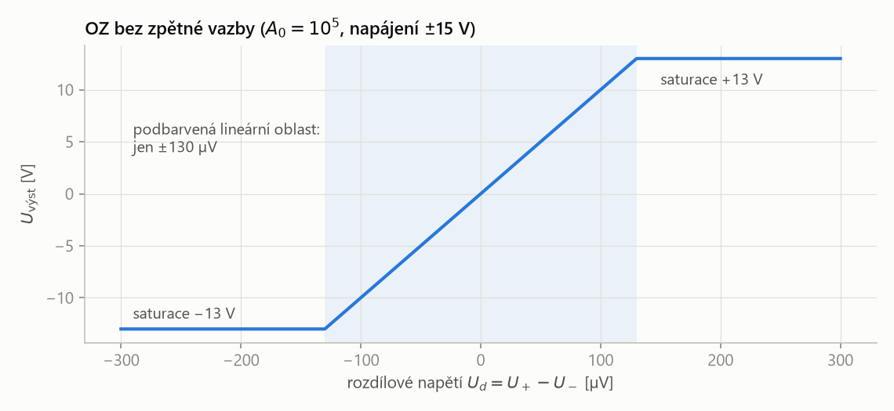
Bez zpětné vazby stačí rozdíl vstupů ±130 µV a výstup je v saturaci (narazí na napájení). OZ by tak fungoval jen jako komparátor („který vstup je větší?“). Abychom mohli lineárně zesilovat, musíme zesílení „zkrotit“ zápornou zpětnou vazbou.
Záporná zpětná vazba a dvě zlatá pravidla
Záporná zpětná vazba je přivedení části výstupního signálu zpět na vstup tak, aby působila proti změně, která ji vyvolala. U OZ se realizuje propojením výstupu s invertujícím vstupem (přímo nebo přes rezistory). Výsledné zesílení pak určují jen prvky ve zpětné vazbě, ne \(A_0\).
zesilovač „sám sebe hlídá“: když výstup vzroste víc, než má, zvedne se i napětí na invertujícím vstupu, rozdíl \(U_+ - U_-\) se zmenší a výstup klesne zpět. Ustálí se tam, kde jsou oba vstupy (téměř) stejné.
Virtuální zkrat je stav OZ se zápornou zpětnou vazbou v lineárním režimu, kdy je napětí mezi jeho vstupy prakticky nulové: \(U_+ \approx U_-\), protože \(U_d = U_\text{výst}/A_0\) a \(A_0\) je obrovské. Je-li neinvertující vstup uzemněn, je invertující vstup na potenciálu země – mluvíme o virtuální nule (zemi).
vstupy jsou na stejném napětí, jako by byly zkratované – ale proud mezi nimi neteče (proto „virtuální“). Pro výstup 10 V a \(A_0 = 10^5\) je rozdíl vstupů jen 0,1 mV.
- Pravidlo 1 (virtuální zkrat): \(U_- = U_+\). Napětí na neinvertujícím vstupu bývá známé (země nebo vstupní signál).
- Pravidlo 2 (nulové vstupní proudy): do vstupů OZ neteče žádný proud. Proud, který přiteče k invertujícímu vstupu, musí celý odtéct zpětnou vazbou.
- 1. Kirchhoffův zákon v uzlu invertujícího vstupu + Ohmův zákon pro každý rezistor.
- Vyjádři \(U_\text{výst}\) a zesílení \(A = U_\text{výst}/U_\text{vst}\).
Tímto postupem se odvodí všechna zapojení níže – stačí si pamatovat postup, ne vzorce.
Invertující zesilovač
Invertující zesilovač je zapojení OZ, ve kterém je vstupní signál přiveden přes rezistor \(R_1\) na invertující vstup, neinvertující vstup je uzemněn a rezistor \(R_2\) tvoří zpětnou vazbu z výstupu na invertující vstup. Zesílení je \(A = -R_2/R_1\).
zesílí signál v poměru rezistorů a otočí jeho znaménko (fázový posun 180°). Zesílení může být i menší než 1 (zeslabení).
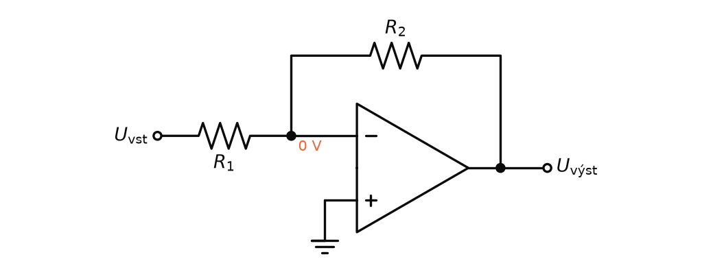
- \(U_+ = 0\) (uzemněn) → podle virtuálního zkratu \(U_- = 0\).
- Proud rezistorem \(R_1\) (Ohmův zákon, na jeho konci je 0 V): \[ I = \frac{U_\text{vst} - 0}{R_1} = \frac{U_\text{vst}}{R_1} \]
- Do vstupu OZ proud neteče → celý proud \(I\) teče přes \(R_2\) k výstupu: \[ I = \frac{0 - U_\text{výst}}{R_2} \]
- Porovnám oba výrazy: \[ \frac{U_\text{vst}}{R_1} = -\frac{U_\text{výst}}{R_2} \] \[ U_\text{výst} = -\frac{R_2}{R_1}\,U_\text{vst} \]
| \(R_1\) | vstupní rezistor – zároveň určuje vstupní odpor zapojení |
| \(R_2\) | rezistor ve zpětné vazbě |
| znaménko − | výstup je otočený (inverze, fáze 180°) |
| \(R_\text{vst}\) | vstupní odpor – zdroj „vidí“ jen \(R_1\) proti virtuální nule |
\(R_1 = 10\) kΩ, \(R_2 = 100\) kΩ, vstup 0,2 V.
\[ A = -\frac{100}{10} = -10 \] \[ U_\text{výst} = -10 \cdot 0{,}2 = -2\ \text{V} \]V decibelech \(|A| = 10\) → 20 dB.
Vstupní odpor je jen \(R_1\) (kΩ až desítky kΩ). Pro zdroj s velkým vnitřním odporem (elektrody) je to zatěžující – vzpomeň si na zatížený dělič. Velké \(R_1\) zase vyžaduje ještě větší \(R_2\) pro stejné zesílení, což zvyšuje šum.
Neinvertující zesilovač
Neinvertující zesilovač je zapojení OZ, ve kterém je vstupní signál přiveden přímo na neinvertující vstup a na invertující vstup se přivádí část výstupního napětí z děliče \(R_2\) (z výstupu) a \(R_1\) (k zemi). Zesílení je \(A = 1 + R_2/R_1\).
zesílí signál bez otočení znaménka, zesílení je vždy aspoň 1 a – hlavně – do vstupu neteče proud, takže zdroj signálu vůbec nezatěžuje.
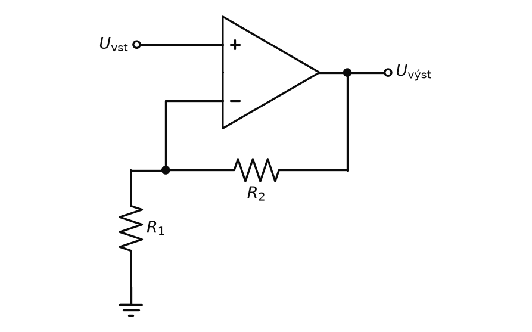
- Do invertujícího vstupu neteče proud → \(R_2\) a \(R_1\) tvoří nezatížený dělič z výstupu k zemi: \[ U_- = U_\text{výst} \cdot \frac{R_1}{R_1 + R_2} \]
- Virtuální zkrat: \(U_- = U_+ = U_\text{vst}\).
- Dosadím a vyjádřím výstup: \[ U_\text{výst} = U_\text{vst} \cdot \frac{R_1 + R_2}{R_1} \] \[ U_\text{výst} = U_\text{vst} \left(1 + \frac{R_2}{R_1}\right) \]
Intuice: OZ nastaví výstup tak velký, aby jeho „zmenšená kopie“ z děliče byla přesně rovna vstupu.
| \(R_1\) | rezistor děliče mezi invertujícím vstupem a zemí |
| \(R_2\) | rezistor zpětné vazby mezi výstupem a invertujícím vstupem |
| \(A\) | vždy ≥ 1, kladné (výstup ve fázi se vstupem) |
| \(R_\text{vst}\) | vstupní odpor – vstupní odpor samotného OZ (MΩ až TΩ) |
\(R_1 = 10\) kΩ, \(R_2 = 90\) kΩ, vstup 0,3 V.
\[ A = 1 + \frac{90}{10} = 10 \] \[ U_\text{výst} = 10 \cdot 0{,}3 = 3\ \text{V} \]Rozdílový (diferenční) zesilovač
Rozdílový (diferenční) zesilovač je zapojení jednoho OZ se čtyřmi rezistory, které zesiluje rozdíl dvou vstupních napětí: signál \(U_1\) jde přes \(R_1\) na invertující vstup (zpětná vazba \(R_2\)), signál \(U_2\) přes dělič \(R_3\), \(R_4\) na neinvertující vstup. Při \(R_3 = R_1\) a \(R_4 = R_2\) platí \(U_\text{výst} = \frac{R_2}{R_1}(U_2 - U_1)\).
kombinace invertujícího a neinvertujícího zesilovače: co je na obou vstupech stejné, se odečte, zesílí se jen rozdíl. Přesně to potřebujeme u EKG – signál srdce je rozdíl napětí mezi elektrodami, rušení je na obou stejné.
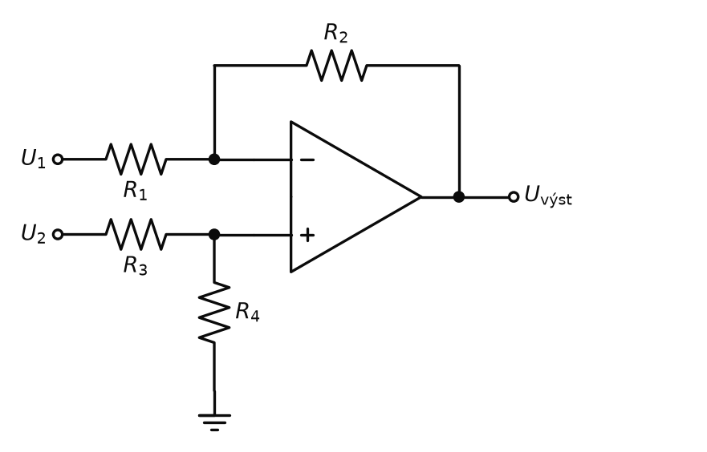
- Neinvertující vstup je na výstupu nezatíženého děliče \(R_3\), \(R_4\): \[ U_+ = U_2 \cdot \frac{R_4}{R_3 + R_4} \]
- Virtuální zkrat \(U_- = U_+\). Proud z \(U_1\) přes \(R_1\) teče celý přes \(R_2\): \[ \frac{U_1 - U_+}{R_1} = \frac{U_+ - U_\text{výst}}{R_2} \]
- Vyjádřím výstup (je to součet „neinvertujícího“ a „invertujícího“ příspěvku): \[ U_\text{výst} = U_+\!\left(1 + \frac{R_2}{R_1}\right) - \frac{R_2}{R_1}\,U_1 \]
- Pro \(R_3 = R_1\), \(R_4 = R_2\) je \(U_+ = U_2 \frac{R_2}{R_1 + R_2}\) a první člen se zjednoduší na \(\frac{R_2}{R_1} U_2\): \[ U_\text{výst} = \frac{R_2}{R_1}\,(U_2 - U_1) \]
| \(U_2 - U_1\) | rozdílové napětí – to se zesiluje |
| \(R_2/R_1\) | rozdílové zesílení \(A_d\) |
| \(R_3, R_4\) | dělič pro neinvertující vstup; jeho poměr musí přesně odpovídat \(R_1, R_2\) |
\(R_1 = R_3 = 10\) kΩ, \(R_2 = R_4 = 100\) kΩ; \(U_1 = 1{,}000\) V, \(U_2 = 1{,}005\) V.
\[ U_\text{výst} = \frac{100}{10}\,(1{,}005 - 1{,}000) \] \[ U_\text{výst} = 10 \cdot 0{,}005 = 0{,}05\ \text{V} \]Společný 1 V na obou vstupech zmizel, zesílil se jen rozdíl 5 mV.
- Malý a nestejný vstupní odpor: vstup \(U_1\) má asi \(R_1\), vstup \(U_2\) má \(R_3 + R_4\). Elektrody s velkým a různým odporem tvoří s nimi děliče → zesilovač by „viděl“ jiný signál, než na elektrodách je.
- Citlivost na přesnost rezistorů: když \(R_4/R_3 \neq R_2/R_1\), zesiluje se i souhlasné napětí a CMRR prudce klesne (viz příklad níže).
- Změna zesílení vyžaduje měnit dva rezistory zároveň.
Obojí řeší přístrojový zesilovač.
Souhlasné napětí a CMRR
Pro dvojici vstupních napětí \(U_1\), \(U_2\) je rozdílové napětí \(U_d = U_2 - U_1\) a souhlasné napětí \(U_s = \frac{U_1 + U_2}{2}\) (průměr obou vstupů, angl. common-mode, \(U_\text{cm}\)). Každou dvojici vstupů lze zapsat jako \(U_{1,2} = U_s \mp U_d/2\).
rozdílové napětí je to, co se mezi elektrodami liší (užitečný biosignál), souhlasné to, co mají obě elektrody společné (síťový brum 50 Hz, offset). Rušení se do těla indukuje skoro stejně všude, proto je souhlasné.
CMRR (common-mode rejection ratio, činitel potlačení souhlasného signálu) je poměr rozdílového zesílení \(A_d\) a souhlasného zesílení \(A_s\) zesilovače: \(\text{CMRR} = A_d / A_s\); obvykle se udává v decibelech: \(\text{CMRR}_\text{dB} = 20 \log_{10}(A_d/A_s)\).
kolikrát víc zesilovač zesílí užitečný rozdíl než společné rušení. Ideální rozdílový zesilovač má \(A_s = 0\) a CMRR nekonečné; reálný má 60–120 dB. Čím víc, tím čistší biosignál.
| \(A_d\) | rozdílové zesílení – měří se jako \(U_\text{výst}/U_d\) při \(U_s = 0\) (vstupy v protifázi) |
| \(A_s\) | souhlasné zesílení – měří se jako \(U_\text{výst}/U_s\) při stejném napětí na obou vstupech |
| \(U_d\), \(U_s\) | rozdílové a souhlasné vstupní napětí |
| CMRR | bezrozměrné číslo, nebo v dB (60 dB = 1000×, 100 dB = 100 000×) |
- Rozdílové zesílení: přivedu rozdílové napětí \(U_d\) (souhlasné nulové), změřím/spočítám výstup → \(A_d = U_\text{výst}/U_d\).
- Souhlasné zesílení: oba vstupy spojím a přivedu na ně stejné napětí \(U_s\) → \(A_s = U_\text{výst}/U_s\).
- \(\text{CMRR} = A_d/A_s\), převedu na dB: \(20 \log_{10}\).
- Obráceně: ze známého CMRR v dB spočítám \(A_s = A_d / 10^{\text{CMRR}_\text{dB}/20}\) a pak rušení na výstupu \(A_s U_s\).
Zesilovač má \(A_d = 1000\) a \(A_s = 0{,}01\).
\[ \text{CMRR} = \frac{1000}{0{,}01} = 10^5 \] \[ \text{CMRR}_\text{dB} = 20 \log_{10} 10^5 = 100\ \text{dB} \]Rozdílový vstup 2 mV dá na výstupu 0,5 V. Stejné napětí 2 V na obou vstupech dá na výstupu 5 mV.
\[ A_d = \frac{0{,}5}{2 \cdot 10^{-3}} = 250 \] \[ A_s = \frac{5 \cdot 10^{-3}}{2} = 0{,}0025 \] \[ \text{CMRR} = \frac{250}{0{,}0025} = 10^5 \] \[ \text{CMRR}_\text{dB} = 100\ \text{dB} \]Na elektrodách je EKG \(U_d = 1\) mV a souhlasný brum \(U_s = 0{,}5\) V (500× větší!). Zesilovač \(A_d = 1000\).
CMRR = 60 dB → \(A_s = 1000/10^{3} = 1\):
\[ \text{signál: } 1000 \cdot 1\ \text{mV} = 1\ \text{V} \] \[ \text{brum: } 1 \cdot 0{,}5\ \text{V} = 0{,}5\ \text{V} \]CMRR = 100 dB → \(A_s = 1000/10^{5} = 0{,}01\):
\[ \text{brum: } 0{,}01 \cdot 0{,}5\ \text{V} = 5\ \text{mV} \]S 60 dB je brum na výstupu poloviční než EKG, se 100 dB je 200× menší.
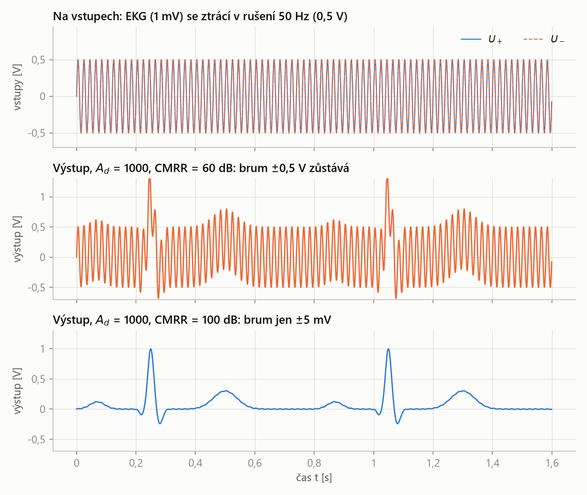
Na vstupech jsou oba průběhy skoro totožné – EKG je jen nepatrný rozdíl mezi nimi. Rozdílový zesilovač vytáhne právě tento rozdíl; jak čistý výstup bude, rozhoduje CMRR. Každých 20 dB navíc = 10× menší brum.
Rozdílový zesilovač \(R_1 = R_3 = 10\) kΩ, \(R_2 = 100\) kΩ, ale \(R_4 = 101\) kΩ (chyba 1 %). Z obecného vzorce z odvození (krok 3) pro \(U_1 = U_2 = U_s\):
\[ \frac{R_4}{R_3 + R_4} = \frac{101}{111} \approx 0{,}9099 \] \[ A_s = 0{,}9099 \cdot 11 - 10 \approx 0{,}0090 \] \[ A_d \approx 10{,}0 \] \[ \text{CMRR} \approx \frac{10{,}0}{0{,}0090} \approx 1110 \approx 61\ \text{dB} \]Jediný rezistor s chybou 1 % srazí CMRR na asi 61 dB. Proto se rozdílové zesilovače vyrábějí jako integrované obvody s laserově dostavenými rezistory a proto přístrojový zesilovač.
„CMRR je poměr rozdílového a souhlasného zesílení, \(A_d/A_s\), většinou v dB jako \(20\log\). Rozdílové zesílení zjistím tak, že přivedu rozdíl napětí mezi vstupy, souhlasné tak, že na oba vstupy dám stejné napětí. U biosignálů je důležité, protože síťové rušení je na všech elektrodách stejné – souhlasné – a mnohonásobně větší než signál. Zesilovač s CMRR 100 dB ho potlačí 100 000× víc než užitečný signál.“
Přístrojový zesilovač
Přístrojový (instrumentační) zesilovač je rozdílový zesilovač složený ze tří OZ: dva neinvertující zesilovače na vstupu (s rezistory \(R\) ve zpětných vazbách propojenými rezistorem \(R_G\)) a za nimi rozdílový zesilovač. Má velmi velký a stejný vstupní odpor obou vstupů, vysoké CMRR a zesílení nastavitelné jediným rezistorem \(R_G\).
„vylepšený“ rozdílový zesilovač: vstupní stupeň nezatěžuje elektrody a sám zesílí rozdíl, výstupní stupeň odečte zbytek souhlasného napětí. Je základem každého EKG, EEG a EMG zesilovače.
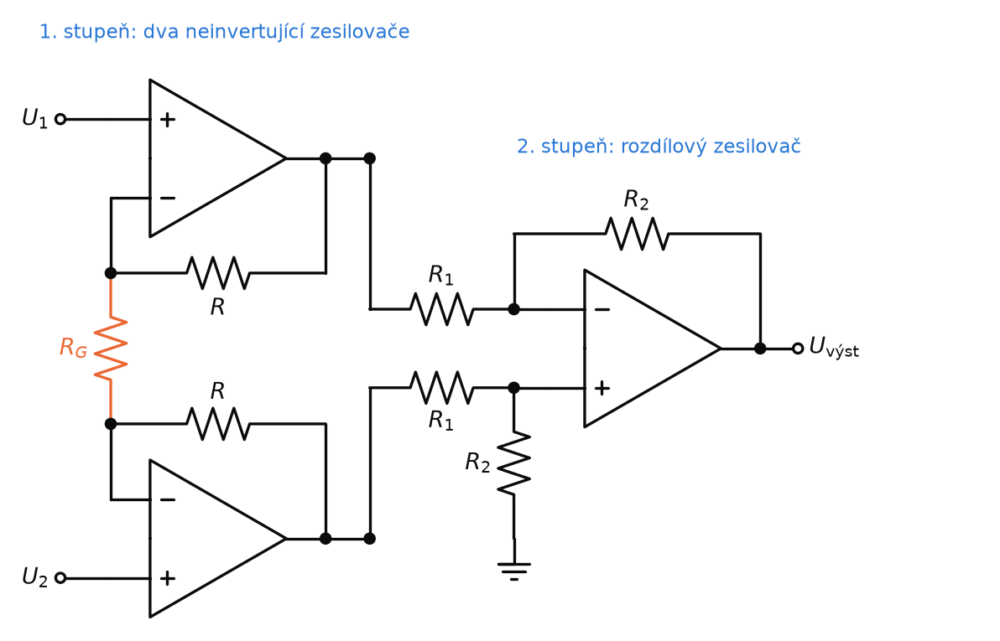
- Vstupy jdou přímo na neinvertující vstupy OZ 1 a 2 → vstupní odpor je obrovský a pro oba vstupy stejný. Elektrody nejsou zatěžovány.
- Rozdílový signál: díky virtuálnímu zkratu jsou na koncích \(R_G\) napětí \(U_1\) a \(U_2\). Rezistorem \(R_G\) teče proud \((U_2 - U_1)/R_G\) a protože do vstupů OZ proud neteče, teče stejný proud i přes oba rezistory \(R\). Mezi výstupy 1. stupně je tedy napětí \((U_2 - U_1)\cdot(R + R_G + R)/R_G\) – rozdíl se zesílí \(\left(1 + 2R/R_G\right)\)×.
- Souhlasný signál: je-li \(U_1 = U_2\), je na obou koncích \(R_G\) stejné napětí, proud neteče a oba výstupy 1. stupně jsou rovny vstupu – souhlasné zesílení je jen 1.
- 2. stupeň (rozdílový zesilovač) zesílí rozdíl výstupů \(R_2/R_1\)× a souhlasnou složku odečte.
Celkový efekt: CMRR se zlepší přibližně o zesílení prvního stupně, protože rozdíl se tam zesílí, ale souhlasný signál ne.
| \(R\) | rezistory ve zpětné vazbě vstupních OZ (oba stejné) |
| \(R_G\) | rezistor nastavující zesílení (gain) – jediná součástka, kterou se zesílení mění |
| \(1 + 2R/R_G\) | zesílení 1. stupně (jen pro rozdílový signál; souhlasný má zesílení 1) |
| \(R_2/R_1\) | zesílení 2. stupně (rozdílový zesilovač, často \(R_2 = R_1\), tj. 1) |
\(R = 10\) kΩ, \(R_G = 1\) kΩ, \(R_1 = 10\) kΩ, \(R_2 = 100\) kΩ.
\[ A_1 = 1 + \frac{2 \cdot 10}{1} = 21 \] \[ A_2 = \frac{100}{10} = 10 \] \[ A_d = 21 \cdot 10 = 210 \]Při \(R = 10\) kΩ a \(R_2/R_1 = 10\) potřebuje 1. stupeň zesílení 100:
\[ 1 + \frac{2R}{R_G} = 100 \] \[ R_G = \frac{2R}{99} = \frac{20\ \text{k}\Omega}{99} \approx 202\ \Omega \]Srovnání zapojení
| zapojení | zesílení | vstupní odpor | k čemu |
|---|---|---|---|
| invertující | \(-R_2/R_1\) otočí fázi, může být < 1 | \(R_1\) (malý) | zesílení/zeslabení s inverzí, sčítání signálů |
| neinvertující | \(1 + R_2/R_1\) stejná fáze, vždy ≥ 1 | velmi velký | zesílení signálu ze zdroje s velkým odporem |
| rozdílový (1 OZ) | \(\frac{R_2}{R_1}\) × \((U_2 - U_1)\) | malý, nestejný | odečtení dvou signálů, potlačení souhlasného napětí |
| přístrojový (3 OZ) | \(\left(1 + \frac{2R}{R_G}\right) \frac{R_2}{R_1}\) | velmi velký, stejný | biosignály (EKG, EEG, EMG), můstky, senzory |
- Neinvertující zesílení je \(1 + R_2/R_1\), ne \(R_2/R_1\). Se stejnými rezistory dá invertující −10, neinvertující 11.
- Virtuální zkrat platí jen se zápornou zpětnou vazbou a mimo saturaci.
- Výstup OZ nikdy nepřekročí napájení: zesílení 100 a vstup 0,5 V nedá 50 V, ale saturaci (~13 V).
- CMRR se počítá jako poměr zesílení, ne napětí; v dB vždy \(20\log\) (napěťový poměr).
„Operační zesilovač zesiluje rozdíl vstupů obrovským zesílením. Se zápornou zpětnou vazbou se ustálí tak, že jsou oba vstupy na stejném napětí, a do vstupů neteče proud – z toho odvodím každé zapojení. Invertující má zesílení \(-R_2/R_1\) a vstupní odpor \(R_1\), neinvertující \(1 + R_2/R_1\) a velmi velký vstupní odpor. Rozdílový zesiluje \(U_2 - U_1\) v poměru \(R_2/R_1\), ale má malý vstupní odpor a jeho CMRR závisí na přesnosti rezistorů. Přístrojový zesilovač předřadí dva neinvertující zesilovače – vstupní odpor je pak velký, zesílení se nastaví jedním rezistorem \(R_G\) a souhlasný signál se v prvním stupni nezesiluje, takže má vysoké CMRR. Proto se používá pro biosignály.“
Shrnutí
Operační zesilovač zesiluje rozdíl napětí svých vstupů se zesílením \(10^5\)–\(10^6\); sám by byl hned v saturaci, proto se zapojuje se zápornou zpětnou vazbou (výstup → invertující vstup). Pak platí dvě pravidla: virtuální zkrat \(U_+ = U_-\) a nulové vstupní proudy; spolu s 1. KZ z nich odvodíme každé zapojení. Invertující zesilovač má \(A = -R_2/R_1\) a vstupní odpor \(R_1\); neinvertující \(A = 1 + R_2/R_1\) (zpětná vazba je dělič) a velmi velký vstupní odpor. Rozdílový zesilovač dává \(\frac{R_2}{R_1}(U_2 - U_1)\), když \(R_4/R_3 = R_2/R_1\); jeho kvalitu udává CMRR \(= A_d/A_s\), v dB \(20\log(A_d/A_s)\), které je citlivé na přesnost rezistorů. Přístrojový zesilovač (3 OZ) má velký a stejný vstupní odpor, zesílení \((1 + 2R/R_G)\cdot R_2/R_1\) a vysoké CMRR – je standardním vstupem biozesilovačů.
Take-home messages
- OZ: \(U_\text{výst} = A_0(U_+ - U_-)\), \(A_0\) obrovské; bez zpětné vazby saturace.
- Záporná ZV → \(U_+ = U_-\) a do vstupů neteče proud. To je celý návod k odvození.
- Invertující: \(-R_2/R_1\), \(R_\text{vst} = R_1\). Neinvertující: \(1 + R_2/R_1\), \(R_\text{vst} \to \infty\).
- Rozdílový: \(\frac{R_2}{R_1}(U_2 - U_1)\) při \(R_4/R_3 = R_2/R_1\); malý vstupní odpor.
- CMRR = \(A_d/A_s\); v dB \(20\log_{10}\). 20 dB navíc = 10× méně rušení.
- 1% chyba jednoho rezistoru → CMRR rozdílového zesilovače jen ≈ 60 dB.
- Přístrojový: \((1 + 2R/R_G)\cdot R_2/R_1\), zesílení jedním \(R_G\), vysoké CMRR, velký vstupní odpor → biosignály.
Otázky ke zkoušce
Jaké vlastnosti má ideální operační zesilovač a proč se používá se zápornou zpětnou vazbou?
Nekonečné zesílení naprázdno, nekonečný vstupní odpor (neteče do něj proud), nulový výstupní odpor, nekonečná šířka pásma a CMRR. Bez zpětné vazby by stačil rozdíl vstupů v řádu stovek µV a výstup by byl v saturaci. Záporná zpětná vazba (výstup na invertující vstup) srazí zesílení na hodnotu danou rezistory, která je přesná a nezávisí na \(A_0\).
Co je virtuální zkrat a jak se používá při odvozování?
U OZ se zápornou zpětnou vazbou je rozdíl vstupů \(U_\text{výst}/A_0 \approx 0\), takže \(U_+ = U_-\), ačkoliv mezi vstupy neteče proud. Při odvození: napětí invertujícího vstupu položím rovno neinvertujícímu, do vstupů nepouštím proud, napíšu 1. KZ pro uzel invertujícího vstupu a vyjádřím výstup.
Odvoďte zesílení invertujícího zesilovače.
\(U_+ = 0\), tedy \(U_- = 0\) (virtuální nula). Proud \(R_1\): \(U_\text{vst}/R_1\). Do vstupu neteče, takže teče přes \(R_2\): \(U_\text{vst}/R_1 = -U_\text{výst}/R_2\). Odtud \(A = -R_2/R_1\). Vstupní odpor je \(R_1\).
Odvoďte zesílení neinvertujícího zesilovače. V čem je lepší než invertující?
Zpětnou vazbu tvoří nezatížený dělič: \(U_- = U_\text{výst} R_1/(R_1+R_2)\). Virtuální zkrat \(U_- = U_\text{vst}\), takže \(U_\text{výst} = U_\text{vst}(1 + R_2/R_1)\). Výhoda: signál jde přímo na vstup OZ, vstupní odpor je velmi velký a zdroj se nezatěžuje; výstup je ve fázi. Nevýhoda: zesílení nemůže být menší než 1.
Jak funguje rozdílový zesilovač a jaké má nevýhody?
Jeden OZ, \(U_1\) přes \(R_1\) na invertující vstup (zpětná vazba \(R_2\)), \(U_2\) přes dělič \(R_3\), \(R_4\) na neinvertující. Při \(R_4/R_3 = R_2/R_1\) je \(U_\text{výst} = \frac{R_2}{R_1}(U_2 - U_1)\) – souhlasná složka se odečte. Nevýhody: malý a pro oba vstupy různý vstupní odpor (zatěžuje elektrody), CMRR silně závisí na shodě rezistorů, změna zesílení vyžaduje změnit dva rezistory.
Definujte CMRR. Jak ho změříte a vypočítáte? Proč je důležitý u biosignálů?
CMRR = \(A_d/A_s\), v dB \(20\log_{10}(A_d/A_s)\). \(A_d\): přivedu rozdílové napětí a dělím jím výstup; \(A_s\): oba vstupy spojím, přivedu stejné napětí a dělím jím výstup. Příklad: 2 mV rozdílově → 0,5 V (\(A_d = 250\)); 2 V souhlasně → 5 mV (\(A_s = 0{,}0025\)); CMRR = \(10^5\) = 100 dB. U biosignálů je síťové rušení na všech elektrodách stejné (souhlasné) a často stokrát až tisíckrát větší než signál; vysoké CMRR ho potlačí.
Popište přístrojový zesilovač, jeho zesílení a proč se používá pro EKG.
Tři OZ: dva neinvertující zesilovače na vstupu, jejichž invertující vstupy spojuje \(R_G\) (zpětné vazby \(R\)), a za nimi rozdílový zesilovač \(R_1\), \(R_2\). \(A_d = (1 + 2R/R_G)\cdot R_2/R_1\). Výhody: velmi velký a stejný vstupní odpor (nezatěžuje elektrody), zesílení nastavitelné jedním rezistorem, souhlasný signál má v 1. stupni zesílení 1, takže CMRR je vysoké. Proto je vstupním stupněm EKG/EEG zesilovačů.
Spočítejte: zesilovač má \(A_d = 1000\) a CMRR 80 dB, na vstupu je EKG 1 mV a souhlasný brum 1 V. Jaký je signál a brum na výstupu?
Na vstupu byl brum 1000× větší než signál, na výstupu je 10× menší.
Základy 4
Napěťový sledovač, integrátor a derivátor
Tři další zapojení s operačním zesilovačem, u kterých stačí znát princip a schéma. Sledovač nic nezesiluje, ale řeší problém zatěžování z kap. 1. Integrátor a derivátor vzniknou z invertujícího zesilovače, když jeden z rezistorů nahradíme kondenzátorem – a z frekvenčního pohledu jsou to aktivní dolní a horní propust z kap. 2.
Napěťový sledovač
Napěťový sledovač (impedanční oddělovač, buffer) je zapojení OZ, ve kterém je vstupní signál přiveden na neinvertující vstup a výstup je přímo spojen s invertujícím vstupem (100% záporná zpětná vazba). Výstupní napětí je rovno vstupnímu (\(A = 1\)), vstupní odpor je velmi velký a výstupní odpor velmi malý.
výstup „kopíruje“ vstup, ale proud pro zátěž dodává OZ ze svého napájení, ne zdroj signálu. Zdroj tak není zatěžován a zátěž dostane plné napětí.
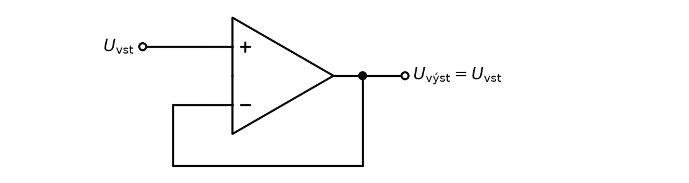
- Virtuální zkrat: \(U_- = U_+\). Invertující vstup je spojen s výstupem, tedy \(U_\text{výst} = U_- = U_+ = U_\text{vst}\).
- Jako speciální případ neinvertujícího zesilovače: \(R_2 = 0\) (zkrat ve zpětné vazbě) a \(R_1 = \infty\) (chybí), takže \(A = 1 + 0/\infty = 1\).
- Proč je užitečný, když nezesiluje? Zesiluje proud (výkon), ne napětí. Do vstupu neteče prakticky žádný proud (vstupní odpor MΩ–TΩ), výstup se chová jako ideální zdroj napětí (výstupní odpor ≈ 0).
| \(A\) | napěťové zesílení = 1 (0 dB), bez inverze |
| \(R_\text{vst}\) | vstupní odpor – velmi velký (vstupní odpor OZ) |
| \(R_\text{výst}\) | výstupní odpor – velmi malý (zlomky Ω díky zpětné vazbě) |
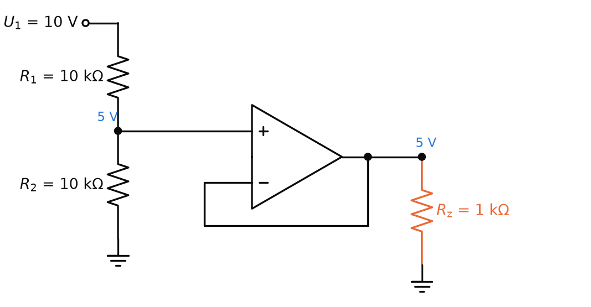
Dělič 10 kΩ / 10 kΩ z 10 V, zátěž \(R_\text{z} = 1\) kΩ. Bez sledovače (zatížený dělič, kap. 1):
\[ R_2 \parallel R_\text{z} = \frac{10 \cdot 1}{10 + 1} \approx 0{,}909\ \text{k}\Omega \] \[ U_{2\text{z}} = 10 \cdot \frac{0{,}909}{10 + 0{,}909} \approx 0{,}83\ \text{V} \]Se sledovačem: do vstupu sledovače neteče proud, dělič zůstane nezatížený (5 V) a sledovač přenese 5 V na zátěž. Proud zátěží 5 mA dodá OZ.
\[ U_\text{z} = U_2 = 5\ \text{V} \]- Oddělení zdroje s velkým vnitřním odporem (elektrody, senzor, dělič) od zátěže s malým odporem.
- Oddělení stupňů filtru – v kaskádě (pásmová propust, kap. 2) se články přestanou navzájem zatěžovat a mezní frekvence platí přesně.
- Aktivní stínění vstupních kabelů, buffer před A/D převodníkem.
Integrátor
Integrátor je zapojení OZ odvozené z invertujícího zesilovače, ve kterém je rezistor ve zpětné vazbě nahrazen kondenzátorem \(C\) (na vstupu zůstává rezistor \(R\)). Výstupní napětí je úměrné časovému integrálu vstupního napětí: \(u_\text{výst}(t) = -\frac{1}{RC}\int u_\text{vst}\,dt\).
výstup „sčítá“ vstup v čase. Stálé vstupní napětí dá na výstupu lineárně rostoucí (klesající) rampu; obdélník se změní na trojúhelník.
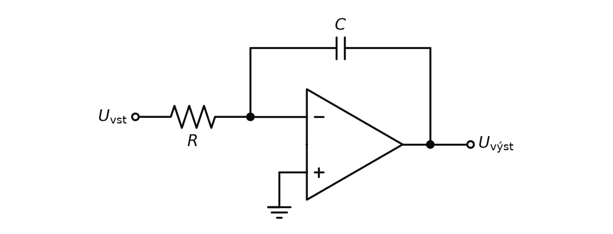
- Invertující vstup je na virtuální nule, takže rezistorem teče proud \(i = u_\text{vst}/R\) – úměrný vstupu, nezávisle na tom, co je na výstupu.
- Do vstupu OZ proud neteče → celý proud nabíjí kondenzátor.
- Napětí na kondenzátoru je úměrné nahromaděnému náboji, tedy integrálu proudu: \(u_C = \frac{1}{C}\int i\,dt\).
- Jedna strana kondenzátoru je na 0 V, druhá na výstupu: \(u_\text{výst} = -u_C\). Odtud vzorec (se znaménkem minus, protože zapojení je invertující).
Proti obyčejnému RC článku je výhoda v tom, že nabíjecí proud je přesně \(u_\text{vst}/R\) (virtuální nula), takže integrace je přesná a lineární.
| \(RC\) | integrační časová konstanta [s] |
| \(u_\text{výst}(0)\) | počáteční napětí (náboj kondenzátoru na začátku) |
| \(|A|\) | zesílení pro sinusový signál: klesá s frekvencí, −20 dB/dek – chová se jako dolní propust |
\(R = 10\) kΩ, \(C = 1\) µF (\(RC = 10\) ms), na vstupu stálé napětí 1 V. Výstup klesá rychlostí
\[ \frac{du_\text{výst}}{dt} = -\frac{u_\text{vst}}{RC} = -\frac{1\ \text{V}}{0{,}01\ \text{s}} = -100\ \text{V/s} \]Po 50 ms je na výstupu
\[ u_\text{výst} = -100 \cdot 0{,}05 = -5\ \text{V} \]a za dalších asi 80 ms narazí na saturaci (≈ −13 V).
Integrátor integruje i nepatrné stejnosměrné napětí (offset OZ, mV) – výstup pomalu „ujede“ až do saturace. V praxi se proto paralelně ke kondenzátoru dává velký rezistor \(R_p\), který omezí stejnosměrné zesílení na \(-R_p/R\). Zapojení se tím stane aktivní dolní propustí s mezní frekvencí \(1/(2\pi R_p C)\), která nad touto frekvencí integruje.
Derivátor
Derivátor je zapojení OZ odvozené z invertujícího zesilovače, ve kterém je vstupní rezistor nahrazen kondenzátorem \(C\) (ve zpětné vazbě zůstává rezistor \(R\)). Výstupní napětí je úměrné časové derivaci vstupního napětí: \(u_\text{výst}(t) = -RC\,\frac{du_\text{vst}}{dt}\).
výstup ukazuje, jak rychle se vstup mění. Stálé napětí dá nulu, rampa dá stálé napětí, trojúhelník se změní na obdélník.
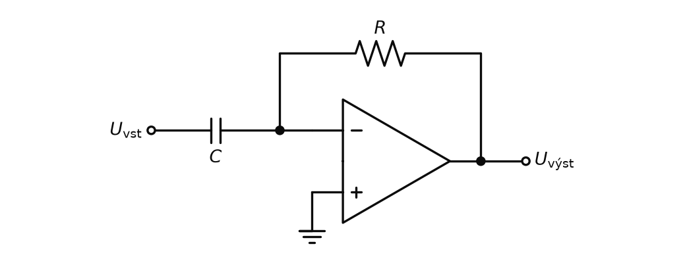
- Invertující vstup je na virtuální nule, napětí na kondenzátoru je tedy přímo \(u_\text{vst}\).
- Proud kondenzátorem je úměrný rychlosti změny napětí: \(i = C\,\frac{du_\text{vst}}{dt}\). Když se vstup nemění, proud neteče.
- Do vstupu OZ proud neteče → celý proud jde přes \(R\), na kterém vytvoří úbytek: \(u_\text{výst} = -R\,i = -RC\,\frac{du_\text{vst}}{dt}\).
| \(RC\) | derivační časová konstanta [s] |
| \(\frac{du_\text{vst}}{dt}\) | rychlost změny vstupního napětí [V/s] |
| \(|A|\) | zesílení pro sinusový signál: roste s frekvencí, +20 dB/dek – chová se jako horní propust |
\(RC = 1\) ms, na vstupu rampa rostoucí rychlostí 100 V/s:
\[ u_\text{výst} = -10^{-3} \cdot 100 = -0{,}1\ \text{V} \]Dokud rampa roste, je výstup stálých −0,1 V; když začne klesat stejnou rychlostí, přeskočí na +0,1 V.
Zesílení derivátoru roste s frekvencí neomezeně – vysokofrekvenční šum (který má malou amplitudu, ale rychlé změny) se zesílí nejvíc a zapojení má sklon k nestabilitě. V praxi se do série s kondenzátorem přidává rezistor (omezí zesílení na vysokých frekvencích na \(-R/R_s\)), případně kondenzátor paralelně k \(R\). V biosignálech se derivace používá např. při detekci QRS komplexu (strmé hrany), většinou ale až číslicově.
Průběhy signálů
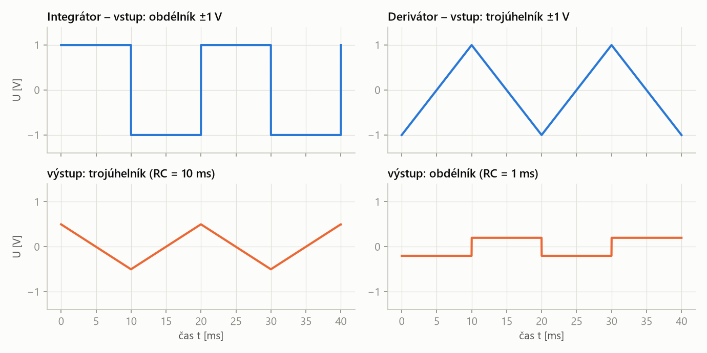
- Integrátor: kladný vstup → výstup lineárně klesá (inverze!), záporný → roste. Sklon je \(u_\text{vst}/(RC)\): 1 V / 10 ms = 100 V/s, za půlperiodu 10 ms změna o 1 V.
- Derivátor: výstup je úměrný sklonu vstupu. Trojúhelník má sklon ±200 V/s, takže výstup je \(\mp 1\ \text{ms} \cdot 200\ \text{V/s} = \mp 0{,}2\) V.
- Integrátor a derivátor jsou navzájem inverzní operace – jako jejich schémata (prohozené R a C).
| zapojení | vstup / zpětná vazba | výstup | frekvenčně, použití |
|---|---|---|---|
| sledovač | signál na + / přímé spojení | \(u_\text{vst}\) | \(A = 1\); oddělení, impedanční převod |
| integrátor | \(R\) / \(C\) | \(-\frac{1}{RC}\int u_\text{vst}\,dt\) | −20 dB/dek (jako DP); integrace, aktivní DP |
| derivátor | \(C\) / \(R\) | \(-RC\,\frac{du_\text{vst}}{dt}\) | +20 dB/dek (jako HP); rychlé změny, aktivní HP |
„Sledovač má vstup na neinvertujícím vstupu a výstup spojený s invertujícím, takže z virtuálního zkratu je výstup roven vstupu. Nezesiluje napětí, ale má obrovský vstupní a malý výstupní odpor, takže odděluje zdroj od zátěže. Integrátor je invertující zesilovač s kondenzátorem ve zpětné vazbě: proud \(u_\text{vst}/R\) nabíjí kondenzátor a výstup je \(-\frac{1}{RC}\int u_\text{vst}\,dt\). Derivátor má kondenzátor na vstupu: proud \(C\,du/dt\) teče přes \(R\), výstup je \(-RC\,du/dt\). Integrátor se prakticky chová jako dolní propust a potřebuje rezistor paralelně ke kondenzátoru proti driftu, derivátor jako horní propust a zesiluje šum.“
Sledovač = výstup přímo na −, kopíruje vstup a odděluje. Integrátor = C ve zpětné vazbě (\(-\frac{1}{RC}\int\)). Derivátor = C na vstupu (\(-RC\frac{d}{dt}\)).
Shrnutí
Napěťový sledovač má vstup na neinvertujícím vstupu a výstup spojený s invertujícím; díky virtuálnímu zkratu je \(U_\text{výst} = U_\text{vst}\). Jeho smyslem je oddělení: velký vstupní odpor nezatěžuje zdroj, malý výstupní odpor udrží napětí na zátěži (dělič se zátěží 1 kΩ dá bez sledovače 0,83 V, se sledovačem 5 V). Integrátor vznikne z invertujícího zesilovače nahrazením rezistoru ve zpětné vazbě kondenzátorem: vstupní proud \(u_\text{vst}/R\) nabíjí kondenzátor a výstup je \(-\frac{1}{RC}\int u_\text{vst}\,dt\); obdélník mění na trojúhelník, frekvenčně klesá −20 dB/dek. Derivátor má kondenzátor na vstupu: proud \(C\,du_\text{vst}/dt\) teče přes \(R\) a výstup je \(-RC\,du_\text{vst}/dt\); trojúhelník mění na obdélník, frekvenčně roste +20 dB/dek a zesiluje šum.
Take-home messages
- Sledovač: \(A = 1\), velký \(R_\text{vst}\), malý \(R_\text{výst}\) → odděluje zdroj od zátěže.
- Sledovač je neinvertující zesilovač s \(R_2 = 0\), \(R_1 = \infty\).
- Integrátor: R na vstupu, C ve zpětné vazbě, \(u_\text{výst} = -\frac{1}{RC}\int u_\text{vst}\,dt\).
- Derivátor: C na vstupu, R ve zpětné vazbě, \(u_\text{výst} = -RC\,du_\text{vst}/dt\).
- Obě jsou invertující; integrátor ≈ DP (drift → paralelní \(R_p\)), derivátor ≈ HP (šum → sériový \(R_s\)).
Otázky ke zkoušce
Nakreslete napěťový sledovač a vysvětlete, k čemu je, když má zesílení 1.
Vstup na neinvertující vstup, výstup spojen přímo s invertujícím. Z virtuálního zkratu \(U_\text{výst} = U_\text{vst}\). Nezesiluje napětí, ale proud: vstupní odpor je obrovský (zdroj není zatěžován), výstupní velmi malý (zátěž dostane plné napětí). Používá se k oddělení zdroje s velkým vnitřním odporem od zátěže, mezi stupni filtrů a před A/D převodníkem.
Proč se dělič se zátěží 1 kΩ „zbortí“ a jak to vyřeší sledovač? (10 V, 10 kΩ / 10 kΩ)
Zátěž je paralelně k \(R_2\): \(10 \parallel 1 \approx 0{,}91\) kΩ, výstup klesne na asi 0,83 V místo 5 V. Se sledovačem mezi děličem a zátěží neteče z děliče žádný proud, dělič zůstane nezatížený (5 V) a proud zátěže dodá OZ – na zátěži je 5 V.
Nakreslete integrátor a vysvětlete jeho princip.
Invertující zesilovač s rezistorem \(R\) na vstupu a kondenzátorem \(C\) ve zpětné vazbě. Invertující vstup je na virtuální nule, rezistorem teče proud \(u_\text{vst}/R\), který celý nabíjí kondenzátor. Napětí kondenzátoru je integrál proudu lomeno \(C\), výstup je jeho záporná hodnota: \(u_\text{výst} = -\frac{1}{RC}\int u_\text{vst}\,dt\). Stálý vstup dá rampu, obdélník trojúhelník.
Nakreslete derivátor a vysvětlete jeho princip. Jaký má praktický problém?
Kondenzátor \(C\) na vstupu, rezistor \(R\) ve zpětné vazbě. Na kondenzátoru je celé vstupní napětí (virtuální nula), teče jím proud \(C\,du_\text{vst}/dt\), který přes \(R\) vytvoří výstup \(-RC\,du_\text{vst}/dt\). Problém: zesílení roste s frekvencí (\(\omega RC\)), takže se nejvíc zesílí vysokofrekvenční šum a zapojení může být nestabilní – řeší se rezistorem v sérii s kondenzátorem.
Jak souvisí integrátor a derivátor s dolní a horní propustí?
Pro sinusový signál má integrátor zesílení \(1/(\omega RC)\), které klesá 20 dB na dekádu – jako dolní propust nad mezní frekvencí. Derivátor má \(\omega RC\), roste 20 dB/dek – jako horní propust pod mezní frekvencí. Po doplnění rezistoru (paralelně k C u integrátoru, do série s C u derivátoru) z nich vzniknou aktivní dolní a horní propust.
Integrátor má \(R = 10\) kΩ, \(C = 1\) µF a na vstupu stálé 1 V. Jaké napětí bude na výstupu po 50 ms?
(za předpokladu, že kondenzátor byl na začátku vybitý; časem by výstup došel do saturace).
Tahák: vzorce a schémata
Stránka na poslední opakování před testem: všechny vzorce na jednom místě, k čemu který slouží a nejčastější chytáky. Podrobný výklad a odvození je vždy v odkazované kapitole.
Obvody a dělič (kap. 1)
| co | vzorec | poznámka |
|---|---|---|
| Ohmův zákon | \(U = R\,I\) | kΩ · mA = V |
| sériově | \(R_s = R_1 + R_2\) | větší než největší |
| paralelně | \(R_1 \parallel R_2 = \frac{R_1 R_2}{R_1 + R_2}\) | menší než nejmenší |
| 1. Kirchhoffův zákon | \(\sum I_\text{dovnitř} = \sum I_\text{ven}\) | pro \(u - 1\) uzlů |
| 2. Kirchhoffův zákon | \(\sum U_\text{zdrojů} = \sum R_k I_k\) | pro \(v - u + 1\) smyček |
| dělič nezatížený | \(U_2 = U_1 \frac{R_2}{R_1 + R_2}\) | stejný proud oběma R |
| dělič zatížený | \(U_{2\text{z}} = U_1 \frac{R_2 \parallel R_\text{z}}{R_1 + R_2 \parallel R_\text{z}}\) | \(R_\text{z} \geq 10\times\) → chyba < 5 % |
Filtry (kap. 2)
| co | vzorec | poznámka |
|---|---|---|
| reaktance C | \(X_C = \frac{1}{2\pi f C}\) | nízké f: rozpojeno, vysoké f: zkrat |
| mezní frekvence RC | \(f_c = \frac{1}{2\pi R C}\) | \(X_C = R\); DP i HP stejně |
| decibely | \(A_\text{dB} = 20\log_{10}|H|\) | 0,707 → −3 dB; 0,1 → −20 dB |
| dolní propust (R podélně, C příčně) | \(|H| = \frac{1}{\sqrt{1 + (f/f_c)^2}}\) | fáze 0° → −45° → −90° |
| horní propust (C podélně, R příčně) | \(|H| = \frac{f/f_c}{\sqrt{1 + (f/f_c)^2}}\) | fáze +90° → +45° → 0° |
| sklon 1. řádu | ±20 dB/dekádu | \(n\)-tý řád: \(20n\) dB/dek |
| pásmová propust | \(B = f_h - f_d\), \(f_0 = \sqrt{f_d f_h}\) | HP (\(f_d\)) + DP (\(f_h\)) za sebou |
| pásmová zádrž (dvojitý T) | \(f_0 = \frac{1}{2\pi R C}\) | příčně \(R/2\) a \(2C\) |
Schémata filtrů
Operační zesilovače (kap. 3, kap. 4)
- \(U_+ = U_-\) (virtuální zkrat – jen se zápornou zpětnou vazbou).
- Do vstupů OZ neteče proud.
- 1. KZ v uzlu invertujícího vstupu + Ohmův zákon → vyjádři \(U_\text{výst}\).
| zapojení | výstup / zesílení | poznámka |
|---|---|---|
| invertující | \(A = -\frac{R_2}{R_1}\) | inverze, i zeslabení; \(R_\text{vst} = R_1\) |
| neinvertující | \(A = 1 + \frac{R_2}{R_1}\) | ZV = dělič; \(A \geq 1\); \(R_\text{vst} \approx \infty\) |
| rozdílový | \(\frac{R_2}{R_1}(U_2 - U_1)\) | jen při \(R_4/R_3 = R_2/R_1\); malý \(R_\text{vst}\) |
| přístrojový | \(\left(1 + \frac{2R}{R_G}\right)\frac{R_2}{R_1}\) | zesílení jedním \(R_G\), vysoké CMRR, \(R_\text{vst} \approx \infty\) |
| sledovač | \(U_\text{výst} = U_\text{vst}\) | oddělovač: \(R_\text{vst} \approx \infty\), \(R_\text{výst} \approx 0\) |
| integrátor (R vstup, C ve ZV) | \(-\frac{1}{RC}\int u_\text{vst}\,dt\) | obdélník → trojúhelník; ≈ DP |
| derivátor (C vstup, R ve ZV) | \(-RC\,\frac{du_\text{vst}}{dt}\) | trojúhelník → obdélník; ≈ HP, šum |
| \(A_d\) | \(U_\text{výst}/U_d\) – výstup / rozdíl vstupů |
| \(A_s\) | \(U_\text{výst}/U_s\) – výstup / stejné napětí na obou vstupech |
| \(U_s\) | souhlasné napětí \((U_1 + U_2)/2\) – rušení 50 Hz |
Z dB zpět: \(A_s = A_d / 10^{\text{CMRR}_\text{dB}/20}\). Např. \(A_d = 1000\), 100 dB → \(A_s = 0{,}01\).
Schémata zapojení s OZ
Nejčastější chytáky
- \(f_c\) vs. \(\omega_c\): \(f_c = 1/(2\pi RC)\) v Hz, \(\omega_c = 1/(RC)\) v rad/s.
- Jednotky: n = \(10^{-9}\), µ = \(10^{-6}\), m = \(10^{-3}\), k = \(10^{3}\), M = \(10^{6}\). U \(f_c\) se to snadno splete o tři řády.
- Dolní vs. horní propust: rozhoduje, na které součástce je výstup – na C = dolní, na R = horní.
- Pásmová propust = filtry za sebou; zádrž = filtry vedle sebe (sečtené).
- Bodeho graf: logaritmická osa frekvence; v \(f_c\) skutečná křivka −3 dB, ne 0 dB.
- Neinvertující zesílení je \(1 + R_2/R_1\), invertující \(-R_2/R_1\) (se znaménkem).
- Saturace: výstup OZ nepřekročí napájení, ať vzorec dá cokoliv.
- CMRR v dB vždy \(20\log\) (poměr napětí/zesílení), ne \(10\log\).
- Zatížený dělič: zátěž je paralelně k \(R_2\), ne k celému děliči.
- Kirchhoff: záporný proud = opačný směr, není to chyba výpočtu.
Slovník pojmů
Všechny definice ze skript na jednom místě, seřazené podle kapitol. Hodí se na rychlé opakování: zakryj text, řekni definici nahlas a pak si ji zkontroluj. Odkaz „výklad“ vede k místu, kde je pojem vysvětlen podrobně.
Z1 · Ohmův zákon, Kirchhoff, dělič napětí
Elektrický proud \(I\) je množství elektrického náboje, které projde průřezem vodiče za jednotku času: \(I = Q/t\). Jednotkou je ampér (A).
kolik náboje „proteče“ vodičem za sekundu. Proud teče skrz součástku – co do ní vteče, to z ní vyteče.
Elektrické napětí \(U\) mezi dvěma body je rozdíl elektrických potenciálů těchto bodů; odpovídá práci, kterou elektrické pole vykoná při přenesení jednotkového náboje z jednoho bodu do druhého. Jednotkou je volt (V).
„tlak“, který žene proud obvodem. Napětí se vždy měří mezi dvěma body (na součástce, proti zemi) – nikdy „v jednom bodě“.
Elektrický odpor \(R\) součástky je poměr napětí na součástce a proudu, který jí protéká: \(R = U/I\). Jednotkou je ohm (Ω). Součástka s (přibližně) stálým odporem se nazývá rezistor.
jak moc součástka „brání“ průtoku proudu. Větší odpor = při stejném napětí menší proud.
Ohmův zákon říká, že proud procházející rezistorem je přímo úměrný napětí na rezistoru a nepřímo úměrný jeho odporu: \(I = U/R\), neboli \(U = R \cdot I\).
dvojnásobné napětí na stejném rezistoru = dvojnásobný proud; dvojnásobný odpor při stejném napětí = poloviční proud. Stačí znát dvě ze tří veličin a třetí dopočítám.
Elektrický výkon \(P\) je práce (energie), kterou elektrický proud vykoná za jednotku času. Na součástce je roven součinu napětí na součástce a proudu, který jí protéká: \[ P = U \cdot I \] Jednotkou je watt (W = V · A).
kolik energie za sekundu součástka spotřebuje – v rezistoru se celá mění na teplo. Po dosazení Ohmova zákona platí i \(P = R \cdot I^2 = U^2/R\), takže stačí znát dvě ze tří veličin. Rezistor z příkladu výše (9 V na 4,7 kΩ) hřeje výkonem asi 17 mW.
Uzel je místo obvodu, kde se spojují alespoň tři vodiče. Větev je část obvodu mezi dvěma sousedními uzly; protéká jí v celé délce stejný proud. Smyčka je uzavřená cesta obvodem, která projde každým uzlem nejvýše jednou.
uzel = „křižovatka“, kde se proud dělí nebo slévá; větev = „silnice“ mezi křižovatkami; smyčka = „okruh“, který mě vrátí tam, kde jsem začal.
1. Kirchhoffův zákon říká, že algebraický součet proudů v každém uzlu je roven nule: \(\sum I_k = 0\). Proudy do uzlu vtékající bereme s jedním znaménkem, vytékající s opačným.
kolik proudu do uzlu přiteče, tolik z něj musí odtéct – náboj se v uzlu nehromadí ani neztrácí (zákon zachování náboje).
2. Kirchhoffův zákon říká, že algebraický součet všech napětí podél libovolné uzavřené smyčky je roven nule: \(\sum U_k = 0\). Napětí zdrojů a úbytky napětí na součástkách bereme se znaménkem podle zvoleného směru oběhu.
když obejdu smyčku a vrátím se na start, jsem na stejném potenciálu – kolik napětí zdroje „dodají“, tolik se ho na součástkách „spotřebuje“ (zákon zachování energie).
Dělič napětí je zapojení dvou sériově řazených rezistorů \(R_1\) a \(R_2\) připojených ke vstupnímu napětí \(U_1\); výstupní napětí \(U_2\) se odebírá z jednoho z rezistorů (\(R_2\)) a je částí vstupního napětí v poměru odporů. Nezatížený dělič je takový, z jehož výstupu se neodebírá žádný proud.
dva rezistory za sebou si rozdělí napětí – každý dostane podíl úměrný svému odporu. Výstup „odbočkou“ mezi nimi dá zmenšenou kopii vstupu.
Zátěž je obvod nebo součástka připojená k výstupu zdroje signálu, která z něj odebírá proud; modelujeme ji odporem \(R_\text{z}\). Zatížený dělič je dělič napětí, k jehož výstupu je zátěž připojena – zátěž je pak paralelně k rezistoru \(R_2\).
jakmile na výstup děliče něco připojím (voltmetr, další stupeň), odebírá to proud a výstupní napětí klesne pod hodnotu spočítanou pro nezatížený dělič.
Z2 · Analogové RC filtry
Analogový filtr je obvod, který propouští složky spojitého signálu v určitém rozsahu frekvencí (propustné pásmo) a potlačuje složky v jiném rozsahu (nepropustné pásmo). Podle polohy propustného pásma rozlišujeme dolní propust, horní propust, pásmovou propust a pásmovou zádrž.
„síto na frekvence“ – co je v propustném pásmu, projde beze změny, co je v nepropustném, se ztlumí. Filtr je pasivní, pokud obsahuje jen R, C (L), a aktivní, pokud obsahuje i zesilovač.
Přenos (napěťový) obvodu je poměr výstupního a vstupního napětí harmonického signálu: \(H = U_\text{výst}/U_\text{vst}\). Jeho závislost na frekvenci je frekvenční (přenosová) charakteristika; skládá se z amplitudové charakteristiky \(|H(f)|\) (kolikrát se změní amplituda) a fázové charakteristiky \(\varphi(f)\) (o kolik se posune fáze).
pošlu na vstup sinusovku dané frekvence a podívám se, jak velká a jak posunutá vyjde na výstupu. Když to udělám pro všechny frekvence, dostanu „otisk“ filtru. (V literatuře se přenos značí také \(K\) nebo \(P\).)
Decibel (dB) je logaritmická jednotka poměru. Napěťový přenos v decibelech je \(A_\text{dB} = 20 \log_{10} |H|\).
místo násobení sčítám a velký rozsah (1 až 0,0001) se vejde do malého rozsahu čísel (0 až −80 dB). 0 dB = beze změny, záporné dB = zeslabení, kladné = zesílení. Každých 20 dB je desetinásobek.
Kondenzátor je součástka tvořená dvěma vodivými elektrodami oddělenými izolantem, která uchovává elektrický náboj. Kapacita \(C\) je poměr náboje na elektrodách a napětí mezi nimi: \(C = Q/U\); jednotkou je farad (F). Proud kondenzátorem je úměrný rychlosti změny napětí: \(i = C \cdot \frac{du}{dt}\).
kondenzátor je „zásobník náboje“. Stejnosměrným proudem neprochází (izolant), ale střídavý signál přes něj „projde“, protože se elektrody pořád nabíjejí a vybíjejí. Čím rychleji se napětí mění, tím větší proud teče.
Kapacitní reaktance \(X_C\) je „odpor“ kondenzátoru vůči harmonickému (sinusovému) proudu, tedy poměr amplitud napětí a proudu na kondenzátoru: \(X_C = \frac{1}{2\pi f C} = \frac{1}{\omega C}\). Je nepřímo úměrná frekvenci; proud kondenzátorem předbíhá napětí o 90°.
pro nízké frekvence má kondenzátor obrovský odpor (stejnosměrně = rozpojený obvod), pro vysoké frekvence malý (blíží se zkratu). Právě tato závislost na frekvenci dělá z RC článku filtr.
Dolní propust (low-pass filter) je filtr, který propouští složky signálu s frekvencí nižší než mezní frekvence \(f_c\) a složky s vyšší frekvencí potlačuje. Pasivní dolní propust 1. řádu tvoří rezistor v podélné větvi a kondenzátor v příčné větvi (výstup na kondenzátoru).
pomalé změny projdou, rychlé „zahladí“. Výstup je vyhlazená verze vstupu.
Horní propust (high-pass filter) je filtr, který propouští složky signálu s frekvencí vyšší než mezní frekvence \(f_c\) a složky s nižší frekvencí (včetně stejnosměrné) potlačuje. Pasivní horní propust 1. řádu tvoří kondenzátor v podélné větvi a rezistor v příčné větvi (výstup na rezistoru).
rychlé změny projdou, pomalé a stálé hodnoty se odstraní. V EKG tak zmizí stejnosměrný offset elektrod a pomalé „plavání“ izolinie.
Mezní frekvence \(f_c\) (zlomová, −3dB frekvence) je frekvence, při které modul přenosu klesne na \(1/\sqrt{2} \approx 0{,}707\) své hodnoty v propustném pásmu, tj. o 3 dB. Pro RC článek 1. řádu (dolní i horní propust) platí \(f_c = \frac{1}{2\pi RC}\).
„hranice“ mezi propustným a nepropustným pásmem. Je to frekvence, kdy má kondenzátor stejnou reaktanci jako rezistor (\(X_C = R\)), výstupní výkon klesne na polovinu a amplituda na 70,7 %.
Řád filtru je řád přenosové funkce, u pasivních RC filtrů daný počtem kondenzátorů (nezávislých reaktančních prvků). Filtr \(n\)-tého řádu má v nepropustném pásmu sklon amplitudové charakteristiky \(20n\) dB na dekádu.
jeden RC článek = 1. řád = pokles o 20 dB na každý desetinásobek frekvence. Chci-li strmější „hranu“, řadím víc článků (2. řád = 40 dB/dek atd.).
Bodeho graf je zobrazení frekvenční charakteristiky ve dvou grafech nad společnou logaritmickou osou frekvence: amplitudová charakteristika v decibelech (\(20\log_{10}|H|\)) a fázová charakteristika ve stupních.
díky logaritmům na obou osách se z křivek stanou téměř přímky, které jde nakreslit od ruky – stačí znát mezní frekvenci a sklon.
Pásmová propust (band-pass filter) je filtr, který propouští složky signálu s frekvencemi mezi dolní mezní frekvencí \(f_d\) a horní mezní frekvencí \(f_h\) a potlačuje frekvence pod \(f_d\) i nad \(f_h\). Šířka pásma je \(B = f_h - f_d\).
„okno“ ve frekvencích – propustí jen pásmo, ve kterém je užitečný signál (EKG asi 0,05–150 Hz), a ořízne drift i šum zároveň.
Pásmová zádrž (band-stop filter) je filtr, který potlačuje složky signálu v pásmu frekvencí kolem střední frekvence \(f_0\) a frekvence pod tímto pásmem i nad ním propouští. Úzká pásmová zádrž potlačující jedinou frekvenci se nazývá notch filtr (odlaďovač).
opak pásmové propusti – „vyřízne“ jedno pásmo a vše ostatní nechá. Typické použití: odstranění síťového brumu 50 Hz z EKG nebo EEG.
Z3 · Operační zesilovače
Operační zesilovač je stejnosměrně vázaný rozdílový zesilovač s velmi velkým zesílením, se dvěma vstupy – neinvertujícím (+) a invertujícím (−) – a jedním výstupem. Výstupní napětí je úměrné rozdílu vstupních napětí: \(U_\text{výst} = A_0\,(U_+ - U_-)\).
„porovnává“ napětí na dvou vstupech a jejich rozdíl obrovsky zesílí. Sám o sobě je nepoužitelný (zesílení je příliš velké a nepřesné); teprve s rezistory ve zpětné vazbě z něj vznikne zesilovač s přesným zesílením.
Záporná zpětná vazba je přivedení části výstupního signálu zpět na vstup tak, aby působila proti změně, která ji vyvolala. U OZ se realizuje propojením výstupu s invertujícím vstupem (přímo nebo přes rezistory). Výsledné zesílení pak určují jen prvky ve zpětné vazbě, ne \(A_0\).
zesilovač „sám sebe hlídá“: když výstup vzroste víc, než má, zvedne se i napětí na invertujícím vstupu, rozdíl \(U_+ - U_-\) se zmenší a výstup klesne zpět. Ustálí se tam, kde jsou oba vstupy (téměř) stejné.
Virtuální zkrat je stav OZ se zápornou zpětnou vazbou v lineárním režimu, kdy je napětí mezi jeho vstupy prakticky nulové: \(U_+ \approx U_-\), protože \(U_d = U_\text{výst}/A_0\) a \(A_0\) je obrovské. Je-li neinvertující vstup uzemněn, je invertující vstup na potenciálu země – mluvíme o virtuální nule (zemi).
vstupy jsou na stejném napětí, jako by byly zkratované – ale proud mezi nimi neteče (proto „virtuální“). Pro výstup 10 V a \(A_0 = 10^5\) je rozdíl vstupů jen 0,1 mV.
Invertující zesilovač je zapojení OZ, ve kterém je vstupní signál přiveden přes rezistor \(R_1\) na invertující vstup, neinvertující vstup je uzemněn a rezistor \(R_2\) tvoří zpětnou vazbu z výstupu na invertující vstup. Zesílení je \(A = -R_2/R_1\).
zesílí signál v poměru rezistorů a otočí jeho znaménko (fázový posun 180°). Zesílení může být i menší než 1 (zeslabení).
Neinvertující zesilovač je zapojení OZ, ve kterém je vstupní signál přiveden přímo na neinvertující vstup a na invertující vstup se přivádí část výstupního napětí z děliče \(R_2\) (z výstupu) a \(R_1\) (k zemi). Zesílení je \(A = 1 + R_2/R_1\).
zesílí signál bez otočení znaménka, zesílení je vždy aspoň 1 a – hlavně – do vstupu neteče proud, takže zdroj signálu vůbec nezatěžuje.
Rozdílový (diferenční) zesilovač je zapojení jednoho OZ se čtyřmi rezistory, které zesiluje rozdíl dvou vstupních napětí: signál \(U_1\) jde přes \(R_1\) na invertující vstup (zpětná vazba \(R_2\)), signál \(U_2\) přes dělič \(R_3\), \(R_4\) na neinvertující vstup. Při \(R_3 = R_1\) a \(R_4 = R_2\) platí \(U_\text{výst} = \frac{R_2}{R_1}(U_2 - U_1)\).
kombinace invertujícího a neinvertujícího zesilovače: co je na obou vstupech stejné, se odečte, zesílí se jen rozdíl. Přesně to potřebujeme u EKG – signál srdce je rozdíl napětí mezi elektrodami, rušení je na obou stejné.
Pro dvojici vstupních napětí \(U_1\), \(U_2\) je rozdílové napětí \(U_d = U_2 - U_1\) a souhlasné napětí \(U_s = \frac{U_1 + U_2}{2}\) (průměr obou vstupů, angl. common-mode, \(U_\text{cm}\)). Každou dvojici vstupů lze zapsat jako \(U_{1,2} = U_s \mp U_d/2\).
rozdílové napětí je to, co se mezi elektrodami liší (užitečný biosignál), souhlasné to, co mají obě elektrody společné (síťový brum 50 Hz, offset). Rušení se do těla indukuje skoro stejně všude, proto je souhlasné.
CMRR (common-mode rejection ratio, činitel potlačení souhlasného signálu) je poměr rozdílového zesílení \(A_d\) a souhlasného zesílení \(A_s\) zesilovače: \(\text{CMRR} = A_d / A_s\); obvykle se udává v decibelech: \(\text{CMRR}_\text{dB} = 20 \log_{10}(A_d/A_s)\).
kolikrát víc zesilovač zesílí užitečný rozdíl než společné rušení. Ideální rozdílový zesilovač má \(A_s = 0\) a CMRR nekonečné; reálný má 60–120 dB. Čím víc, tím čistší biosignál.
Přístrojový (instrumentační) zesilovač je rozdílový zesilovač složený ze tří OZ: dva neinvertující zesilovače na vstupu (s rezistory \(R\) ve zpětných vazbách propojenými rezistorem \(R_G\)) a za nimi rozdílový zesilovač. Má velmi velký a stejný vstupní odpor obou vstupů, vysoké CMRR a zesílení nastavitelné jediným rezistorem \(R_G\).
„vylepšený“ rozdílový zesilovač: vstupní stupeň nezatěžuje elektrody a sám zesílí rozdíl, výstupní stupeň odečte zbytek souhlasného napětí. Je základem každého EKG, EEG a EMG zesilovače.
Z4 · Sledovač, integrátor, derivátor
Napěťový sledovač (impedanční oddělovač, buffer) je zapojení OZ, ve kterém je vstupní signál přiveden na neinvertující vstup a výstup je přímo spojen s invertujícím vstupem (100% záporná zpětná vazba). Výstupní napětí je rovno vstupnímu (\(A = 1\)), vstupní odpor je velmi velký a výstupní odpor velmi malý.
výstup „kopíruje“ vstup, ale proud pro zátěž dodává OZ ze svého napájení, ne zdroj signálu. Zdroj tak není zatěžován a zátěž dostane plné napětí.
Integrátor je zapojení OZ odvozené z invertujícího zesilovače, ve kterém je rezistor ve zpětné vazbě nahrazen kondenzátorem \(C\) (na vstupu zůstává rezistor \(R\)). Výstupní napětí je úměrné časovému integrálu vstupního napětí: \(u_\text{výst}(t) = -\frac{1}{RC}\int u_\text{vst}\,dt\).
výstup „sčítá“ vstup v čase. Stálé vstupní napětí dá na výstupu lineárně rostoucí (klesající) rampu; obdélník se změní na trojúhelník.
Derivátor je zapojení OZ odvozené z invertujícího zesilovače, ve kterém je vstupní rezistor nahrazen kondenzátorem \(C\) (ve zpětné vazbě zůstává rezistor \(R\)). Výstupní napětí je úměrné časové derivaci vstupního napětí: \(u_\text{výst}(t) = -RC\,\frac{du_\text{vst}}{dt}\).
výstup ukazuje, jak rychle se vstup mění. Stálé napětí dá nulu, rampa dá stálé napětí, trojúhelník se změní na obdélník.